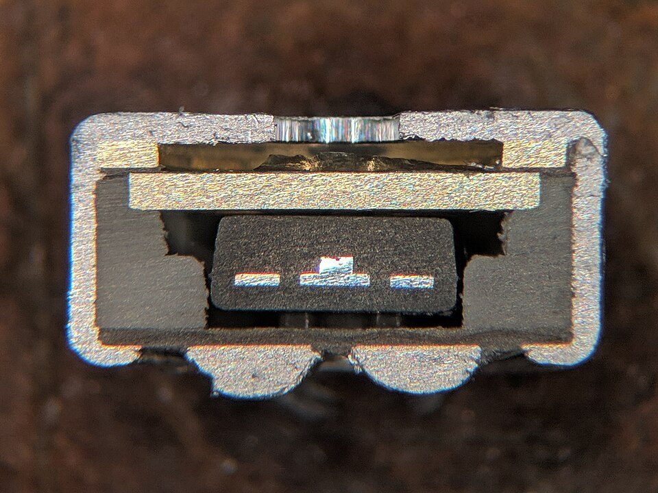
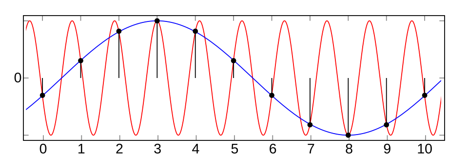
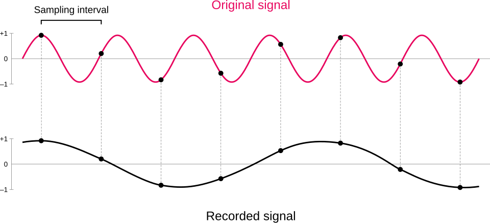
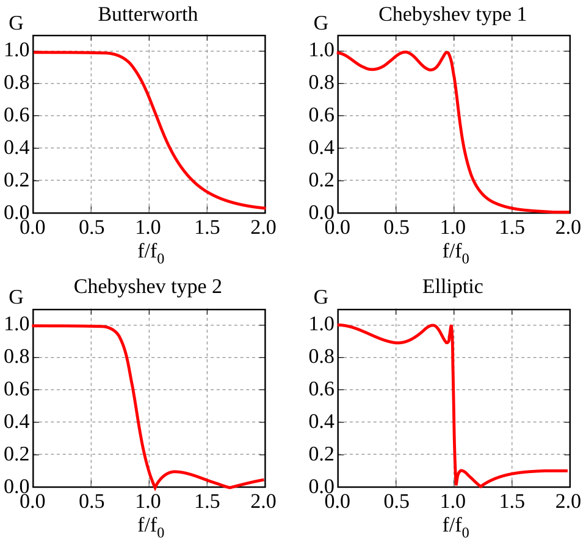
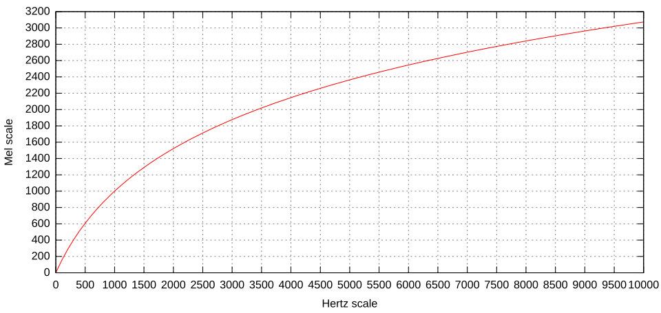
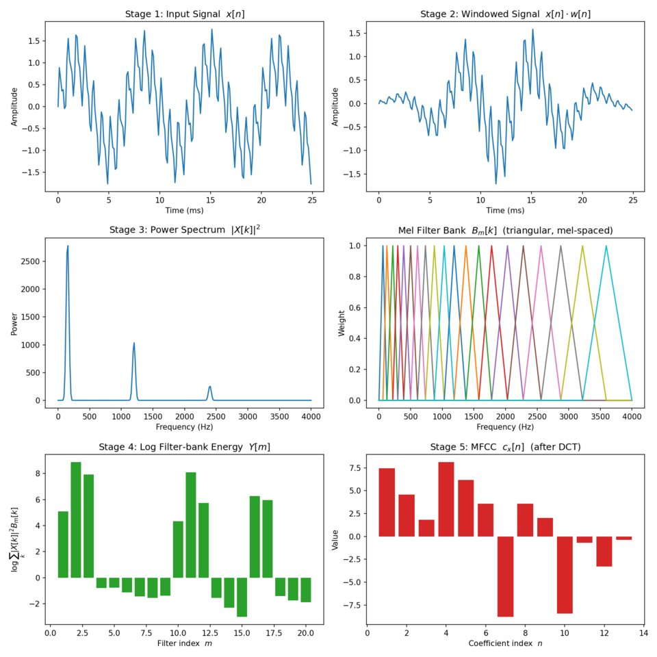
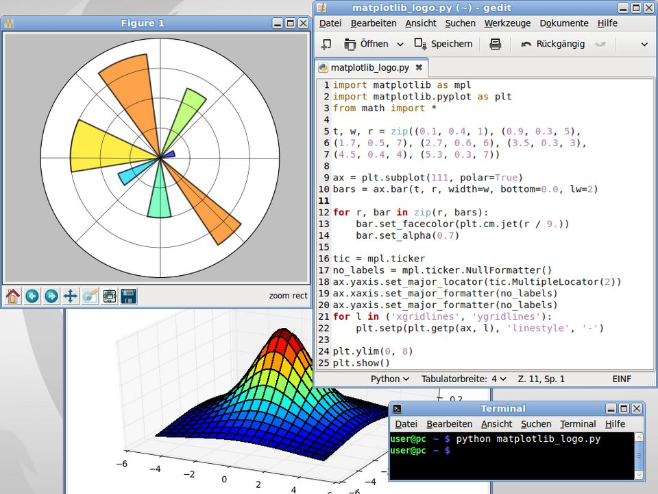
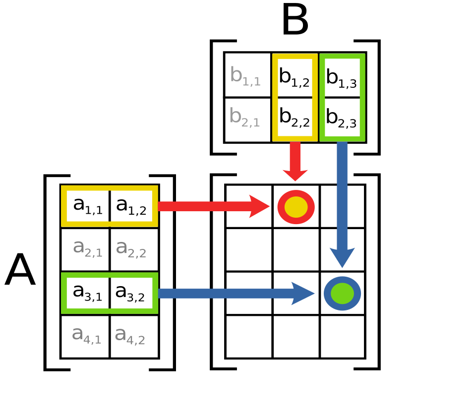

A microphone converts the tiny pressure fluctuations of sound into a proportional electrical voltage. Every audiological instrument that listens (sound level meters, hearing-aid analysers, real-ear probe systems, otoacoustic emission probes and the hearing aid itself) begins with one, so its operating principle sets the limits on what the instrument can measure or deliver.
What it is
An electroacoustic transducer: a thin diaphragm moved by sound pressure, coupled to a mechanism (a coil in a magnetic field, or a variable capacitor) that produces a voltage proportional to the diaphragm motion.
Why it is required
Sound cannot be amplified, filtered, measured or stored until it is an electrical signal. The choice of transduction principle decides sensitivity, noise, size, robustness and power needs, which is why a hearing aid, a studio and a calibration laboratory use different microphones.
How it works
Pressure difference across the diaphragm produces a force; the diaphragm moves a few nanometres; the motion either induces a voltage in a moving coil (dynamic) or changes the gap of a charged capacitor (condenser and electret), which changes the voltage across it. A preamplifier then converts the weak, often high-impedance signal into a usable one.
Dynamic (moving-coil) microphone: sound moves the membrane and attached coil inside a permanent-magnet field, inducing the signal voltage.Image: Arne Nordmann (norro), Wikimedia Commons, CC BY-SA 3.0
Electret condenser microphone: the capsule is a charged capacitor followed by a built-in JFET impedance converter powered through a load resistor.Image: See source page, Wikimedia Commons, CC BY-SA 3.0

Cross-section of a small electret microphone capsule, the type used in many hearing aids and headsets.Image: TubeTimeUS, Wikimedia Commons, CC BY-SA 4.0
Background and principle of operation
Sound in air is a small, rapid variation of pressure about the static atmospheric pressure (about 101 kPa). The variation itself is tiny: a conversational voice at 1 m produces an RMS sound pressure of roughly 20 to 50 mPa, and the threshold of hearing at 1 kHz corresponds to about 20 µPa. We express sound pressure on the decibel scale relative to the reference pressure p0 = 20 µPa.
L_p = 20 log10(p / p0) dB SPL
where p is the RMS sound pressure in pascals (Pa) and p0 = 20 µPa. 1 Pa corresponds to 94 dB SPL (93.98 dB exactly).
A transducer is any device that converts energy from one form to another. A microphone is an electroacoustic transducer that converts acoustic energy into electrical energy. It always has two stages. The first is the acoustic-to-mechanical stage: sound pressure acting on the area of a diaphragm produces a force (F = p × A) that moves the diaphragm. The second is the mechanical-to-electrical stage, which is where the three microphone families differ.
Dynamic (moving-coil) microphone
A light diaphragm carries a small coil of fine wire (the voice coil) that sits in the narrow annular gap of a permanent magnet. When sound moves the diaphragm, the coil moves through the magnetic field and, by Faraday's law of electromagnetic induction, a voltage appears across the coil. For a coil of total wire length l moving with velocity v through a radial flux density B, the induced voltage is:
e = B l v
where e is the open-circuit voltage (V), B the magnetic flux density in the gap (tesla), l the length of wire in the gap (m) and v the coil velocity (m/s).
The output is proportional to diaphragm velocity. The coil has a low electrical impedance (commonly 150 to 600 Ω), so the signal can travel along long cables without special electronics, and no power supply is needed. The price is a relatively heavy moving system (diaphragm plus coil), which limits high-frequency response and transient accuracy, and a low sensitivity of typically 1 to 3 mV/Pa. Dynamic microphones are robust, tolerate very high sound levels and humidity, and are common for live speech and in talk-back channels of some audiometers, but they are not used as measurement microphones or in hearing aids.
Condenser (capacitor) microphone
A condenser microphone is a capacitor. One plate is a very thin, tensioned metal or metallised-polymer diaphragm; the other is a rigid, perforated backplate a few tens of micrometres behind it. The capacitance of two parallel plates is:
C = ε0 A / d
where ε0 = 8.854 × 10^-12 F/m (permittivity of air, approximately that of free space), A the effective plate area (m²) and d the gap (m).
The capacitor is charged through a very large resistor (often in the gigaohm range) from a polarisation voltage E0, classically 200 V in measurement microphones. Because the resistor is so large, the charge Q cannot change quickly, so at audio frequencies the charge is effectively constant. With Q constant, V = Q/C = Q d / (ε0 A), so the voltage across the capacitor is proportional to the gap d. When sound moves the diaphragm by a small displacement x, the output voltage change is:
e = E0 × x / d
where E0 is the polarisation voltage, x the diaphragm displacement and d the rest gap. The output is proportional to displacement.
The diaphragm is extremely light, so the response can be flat to 20 kHz and beyond, sensitivity is high (typically 10 to 50 mV/Pa for laboratory types), and self-noise is low. The disadvantages are the need for a polarisation supply (external 200 V for classic measurement microphones, or 48 V phantom power for studio types), sensitivity to humidity and condensation, and a very high source impedance that requires a preamplifier mounted directly behind the capsule.
Electret condenser microphone
An electret is a dielectric material (commonly a fluoropolymer film such as PTFE or FEP) that has been given a quasi-permanent electric charge during manufacture, analogous to the way a permanent magnet holds magnetisation. Placing a charged electret layer on the diaphragm (foil electret) or on the backplate (back electret) creates the polarising field without any external high voltage. The effective polarisation is typically equivalent to one hundred volts or more. The capsule then behaves exactly like a condenser microphone.
The capsule still has a very high impedance (a capacitance of a few picofarads), so almost every electret microphone contains a small junction field-effect transistor (JFET) as an impedance converter. The gate of the JFET connects to the capsule and presents an extremely high input impedance; the drain delivers a low-impedance signal to the following circuit. The JFET needs a small DC supply, typically 1 to 10 V through a load resistor of a few kilohms (in hearing aids, the supply is around 1 to 1.3 V from the battery or regulator). Electret microphones are cheap, small, sensitive and consume very little current, which is why they dominated hearing aids for decades. Increasingly, hearing aids, phones and earbuds use MEMS (micro-electro-mechanical systems) microphones: silicon condenser capsules etched on a chip, with an integrated amplifier and often an integrated ADC giving a digital output. MEMS microphones are covered further in Topic 1.2.
Key ideaA dynamic microphone generates a voltage because a coil moves in a magnetic field (output proportional to velocity). A condenser or electret microphone generates a voltage because a charged capacitor changes its gap (output proportional to displacement). The electret simply stores the charge permanently, and the JFET makes its high-impedance output usable.
Architecture and signal flow
Figure 1.1a. The three microphone families share the acoustic-to-mechanical stage (the diaphragm) and differ in the mechanical-to-electrical stage and the conditioning electronics. Top row: dynamic; middle: externally polarised condenser; bottom: electret condenser.
Figure 1.1b. Electret microphone as used in hearing aids and headsets. The JFET inside the microphone can converts the very high capsule impedance into a low output impedance; DC reaches the drain through the load resistor, and a coupling capacitor passes only the audio signal.
Walk-through of the electret chain: (1) sound enters through the sound port, a small inlet that may be protected by a mesh or wind screen; (2) the diaphragm moves relative to the backplate; (3) the stored electret charge turns gap changes into voltage changes at the capsule terminals; (4) the JFET gate senses this voltage without drawing current; (5) the drain current varies with the gate voltage, and across the load resistor this appears as a low-impedance voltage; (6) the coupling capacitor removes the DC bias so that only the audio signal passes to the amplifier or analog-to-digital converter.
Components
Component
Function
What can go wrong
Diaphragm
Collects force from sound pressure and moves with it.
Punctured or stiffened by debris, moisture or physical damage; changes sensitivity and response.
Voice coil and magnet (dynamic)
Convert diaphragm velocity to voltage by induction.
Coil rubbing in the gap after a drop; hum pick-up from nearby transformers.
Backplate (condenser, electret)
Fixed electrode; its holes and cavities add acoustic damping that shapes the response.
Contamination or moisture creating leakage currents, heard as crackle.
Electret layer
Stores permanent polarising charge.
Slow charge loss at high temperature and humidity lowers sensitivity over years.
JFET impedance converter
Buffers the very high capsule impedance.
Wrong supply voltage or load gives distortion or no output; electrostatic damage.
Polarisation supply and preamplifier (condenser)
Provide the 200 V or phantom 48 V bias and buffer the capsule.
Missing phantom power (no output); moisture causes noise bursts.
Sound port, inlet tube, screens
Admit sound; protect from wax, dust and wind.
Blocked port causes weak or dull sound (a very common hearing-aid fault).
Specifications are treated in depth in Topic 1.2; this table gives the typical ranges for the three families so they can be compared.
Parameter
Dynamic
Condenser (externally polarised)
Electret / MEMS
Clinical meaning
Transduction
Electromagnetic induction
Capacitance change, external bias
Capacitance change, stored charge
Decides power need and robustness.
Sensitivity (typical)
1 to 3 mV/Pa
10 to 50 mV/Pa (measurement), up to about 30 mV/Pa studio
about 4 to 20 mV/Pa
Higher sensitivity eases preamplifier noise.
Self-noise (typical)
Not usually quoted (low, but low output)
about 5 to 20 dB(A) for large capsules
about 20 to 35 dB(A)
Limits the quietest sound that can be measured or amplified.
Frequency range (typical)
about 50 Hz to 15 kHz
a few Hz to 20 kHz or more
about 100 Hz to 10 kHz or more
Hearing aids need roughly 100 Hz to 8 kHz or wider.
Power needed
None
200 V polarisation or 48 V phantom
About 1 to 10 V, microamps to a few hundred microamps
Battery life in hearing aids.
Size
Large
6 mm to 25 mm capsule
Down to about 2 to 4 mm
Only electret and MEMS fit in hearing aids.
Robustness
Very high
Delicate, humidity sensitive
Good
Field use and ear-level use.
Equations and worked examples
Microphone sensitivity is the output voltage per unit sound pressure, given either in mV/Pa or in decibels relative to 1 V/Pa (dBV re 1 V/Pa, often written dBV/Pa):
S_dB = 20 log10( S / (1 V/Pa) ) dBV re 1 V/Pa
S = 10^(S_dB / 20) V/Pa
e = S × p, with p = 20 µPa × 10^(L_p / 20)
where S is sensitivity, e the RMS output voltage and L_p the sound pressure level in dB SPL.
Worked example 1 (the syllabus calculation). A hearing-aid electret microphone has a sensitivity of −42 dBV re 1 V/Pa. What is its output for speech at 65 dB SPL?
At 65 dB SPL, p = 20 µPa × 10^(65/20) = 20 µPa × 1778 = 0.0356 Pa.
e = 7.94 mV/Pa × 0.0356 Pa = 0.282 mV, that is about 282 µV RMS.
The same speech on a dynamic microphone of 2 mV/Pa gives only 71 µV; on a measurement microphone of 50 mV/Pa it gives 1.78 mV. A quick check: every 20 dB change in SPL changes the voltage by a factor of 10, so at 94 dB SPL (1 Pa) the electret output equals its sensitivity, 7.94 mV.
Worked example 2 (why the capsule needs a buffer). A half-inch measurement capsule has a capacitance of the order of 15 pF. Its impedance at 20 Hz is XC = 1 / (2π f C) = 1 / (2 × 3.1416 × 20 × 15 × 10^-12) = 1 / (1.885 × 10^-9) ≈ 530 MΩ. Any following input with a much lower impedance would short-circuit the low-frequency signal, so the preamplifier input must be in the gigaohm range.
Worked example 3 (condenser output). An idealised parallel-plate capsule has an effective area of 1.13 × 10^-4 m² (12 mm diameter) and a 20 µm gap. C = 8.854 × 10^-12 × 1.13 × 10^-4 / (20 × 10^-6) = 50 pF (real capsules are lower because only part of the diaphragm moves). With E0 = 200 V and a displacement of 0.25 nm, e = 200 × 0.25 × 10^-9 / (20 × 10^-6) = 2.5 mV. The diaphragm moves less than the diameter of a few atoms, yet a measurable voltage results.
Worked example 4 (dynamic output). With B = 1 T, l = 2 m of wire in the gap and a coil velocity of 1 mm/s, e = 1 × 2 × 0.001 = 2 mV.
Near field, far field and microphone placement
In the far field (more than about one wavelength and several source dimensions away), sound pressure falls by about 6 dB per doubling of distance from a small source in free field (inverse square law). In the near field, close to the source, level changes rapidly with small movements, and directional (pressure-gradient) microphones show proximity effect: a bass boost that grows as the source gets closer because the pressure gradient near a spherical source is larger at low frequencies. Omnidirectional pressure microphones do not show proximity effect.
ΔL = 20 log10(r2 / r1) dB (point source, free field)
where r1 and r2 are the old and new distances. From 30 cm to 15 cm: 20 log10(2) = 6.0 dB increase.
For speech recordings (for example recorded speech test material), keep a fixed mouth-to-microphone distance of about 15 to 30 cm, slightly off axis to avoid breath pops, in a quiet, non-reverberant room. For measurement, the microphone position is defined by the procedure: at the reference point of a sound field, at the coupler, or near the tympanic membrane for real-ear measurement.
Clinical applications
Hearing aids: electret and, increasingly, MEMS microphones are chosen for small size, low current drain and adequate noise. Two microphones on a behind-the-ear aid form a directional system (Topic 1.2).
Sound level meters and calibration: externally polarised or prepolarised (electret) condenser measurement microphones calibrate audiometers, sound booths and sound-field speakers.
Real-ear measurement: a probe-tube microphone (an electret or MEMS element with a thin silicone tube) measures SPL near the eardrum; a second reference microphone at the ear controls the stimulus level.
Otoacoustic emission and immittance probes: miniature electret or MEMS microphones inside the probe pick up the ear-canal pressure; their self-noise is one of the limits on detecting weak emissions.
Speech material and talkback: condenser microphones record speech-audiometry material; dynamic or electret microphones serve as the audiometer talk-over microphone for live-voice testing, where the VU meter is monitored.
Assistive listening: remote (lapel or table) microphones on FM or digital wireless systems improve signal-to-noise ratio by moving the microphone close to the talker.
Clinical linkMoving a microphone from 1 m to 15 cm from a talker raises speech level by 20 log10(1/0.15) = 16.5 dB while room noise stays the same. This is the single most effective way to improve signal-to-noise ratio, and it is exactly what a remote microphone system does.
Limitations, errors and troubleshooting
Problem
Likely cause
What to check or do
No output from a studio condenser microphone
Phantom power switched off
Enable 48 V on the interface; check the cable is balanced (XLR).
Weak, dull hearing-aid sound
Microphone port blocked by debris or wax guard clogged
Inspect under magnification, replace microphone cover or filter; listen with a stethoclip.
Intermittent crackle
Moisture in capsule or corroded contacts
Dry the device (drying kit), check battery contacts, avoid rapid temperature change.
Hum at 50 Hz and harmonics
Magnetic pick-up by dynamic microphone coil or ground loop
Move away from transformers, use balanced cables, single earth point.
Bass boost and level changes when talker moves
Proximity effect in near field of a directional microphone
Fix the distance; use an omnidirectional microphone for recordings.
Gradual loss of sensitivity
Electret charge decay, diaphragm contamination
Recalibrate against a sound calibrator; replace capsule if outside tolerance.
Distortion on loud sounds
JFET or preamplifier overload, not the capsule
Check supply voltage and load; use a lower-sensitivity microphone or pad.
Demonstration
Equipment: a dynamic microphone, a studio condenser microphone with phantom power, a two-terminal electret capsule with a 2.2 kΩ load resistor and 3 to 9 V supply, a discarded hearing-aid microphone or MEMS breakout board, cutaway images, an audio interface with a laptop (Audacity or Python), and an oscilloscope if available.
Show cutaway images or dismantled capsules. Point out the coil and magnet, the diaphragm and backplate, and the JFET inside an electret can.
Connect the dynamic microphone to the interface with phantom power off, speak at a fixed 20 cm distance and note the peak level in Audacity.
Repeat with the condenser microphone (phantom on) at the same distance and gain. Students should observe a markedly higher level for the same speech, consistent with higher sensitivity.
Switch phantom power off on the condenser: the output disappears. Discuss why the dynamic microphone did not need it.
Wire the electret with its load resistor, show the DC bias on the oscilloscope and the small AC speech signal riding on it; then show it after the coupling capacitor.
Compare manufacturer frequency-response curves for each microphone on one slide; note the presence peak of the vocal dynamic and the flatness of the condenser.
Rotate a cardioid microphone while a loudspeaker plays a steady tone; students observe the level drop at the rear. Then use the polar pattern demonstration in Topic 1.2.
Current developments
MEMS microphones have become dominant in phones, earbuds and many hearing aids because they are small, reflow-solderable and have tightly matched sensitivity, which helps directional processing.
Digital-output microphones (pulse-density modulation or similar interfaces) move the analog-to-digital converter into the microphone package, reducing analog noise pick-up.
Multi-microphone arrays on each device, and binaural links between two hearing aids, enable beamforming beyond what one pair of microphones allows.
Low-noise MEMS designs, including piezoelectric MEMS types, aim to close the gap in self-noise with electret capsules.
Miniature microphones placed in the ear canal (for example on the receiver module of some receiver-in-canal designs) exploit the natural pinna acoustics.
Practical activity and assessment
Collect datasheets for one dynamic, one studio condenser, one measurement condenser and one hearing-aid electret or MEMS microphone.
Prepare a comparison table (dynamic vs condenser vs electret) with rows for principle, sensitivity in mV/Pa and dBV re 1 V/Pa, self-noise, maximum SPL, frequency range, power supply and size.
For each microphone, calculate the expected output voltage at 65 dB SPL and at 94 dB SPL using the formulae above. Show your working.
Recommend one microphone each for (a) recording speech-test material, (b) calibrating a sound-field audiometer, (c) a hearing aid, giving two reasons each.
Deliverable: one-page table plus calculations and recommendations (Practical P1 record).
References
Dillon, H. Hearing Aids. Thieme / Boomerang Press (chapter on hearing-aid components).
Kates, J. M. Digital Hearing Aids. Plural Publishing.
Eargle, J. The Microphone Book. Focal Press.
Beranek, L. L. and Mellow, T. J. Acoustics: Sound Fields and Transducers. Academic Press.
Kinsler, L. E., Frey, A. R., Coppens, A. B. and Sanders, J. V. Fundamentals of Acoustics. Wiley.
Essential characteristics of microphones for sound measurement and hearing aids
1 hourPractical P1Practical P10
A microphone datasheet is a compact description of how faithfully, how quietly and how loudly a microphone can convert sound. Measurement microphones are optimised for accuracy and stability; hearing-aid microphones for size, current drain and directional performance. Reading these specifications correctly is essential for calibrating equipment, choosing a sound level meter and understanding why a hearing aid sounds noisy, distorted or directional.
What it is
The set of measurable properties of a microphone: frequency response, sensitivity, self-noise, maximum SPL and dynamic range, polar pattern and directivity, phase and transient behaviour, and the way it is coupled to the sound field.
Why it is required
An audiometer is only as accurate as the sound level meter used to calibrate it, and a hearing aid can only amplify what its microphone delivers. Mismatched or poorly specified microphones cause calibration errors, noisy fittings, distortion of loud sounds and weak directional benefit.
How it works
Each property is measured under standard conditions (for example sensitivity at 1 kHz and 94 dB SPL, noise A-weighted in a quiet enclosure, polar response in an anechoic chamber). The numbers are then combined: for instance, maximum SPL minus self-noise gives the usable dynamic range.
Cardioid polar pattern: full sensitivity at the front, a null at the rear.Image: Nicoguaro, Wikimedia Commons, CC BY 4.0
The frequency response is the sensitivity plotted against frequency, usually normalised to 0 dB at 1 kHz. Flatness is the tolerance around that line, for example ±1 dB from 20 Hz to 12.5 kHz. A condenser capsule behaves like a mass-spring system: below its diaphragm resonance the response is stiffness-controlled and flat; at resonance it peaks unless damped by the air in the backplate holes; above it the response falls. Designers set the resonance above the band of interest and add damping to flatten it. The low-frequency limit is set by a tiny static pressure equalisation vent that lets atmospheric pressure equalise behind the diaphragm.
At high frequencies the microphone body itself disturbs the sound field. When the wavelength becomes comparable to the microphone diameter (a half-inch microphone is 12.7 mm; the wavelength at 10 kHz is 34 mm), reflection and diffraction raise the pressure at the diaphragm above the undisturbed free-field pressure by several decibels for sound arriving head-on. This leads to three kinds of measurement microphone:
Type
Designed to be flat for
How to use it
Typical use
Free-field
The pressure that would exist without the microphone, for sound arriving from one direction (0°)
Point it at the source
Sound-field audiometry calibration, outdoor and anechoic measurements; common in IEC-type sound level meters
Pressure
The actual pressure at its diaphragm
Mount it flush in a wall or inside a coupler
Couplers, ear simulators, hearing-aid test boxes, audiometer earphone calibration
Random-incidence (diffuse-field)
Sound arriving equally from all directions
In reverberant spaces; pointed at about 70° to 90° to a single source
Reverberant rooms, noise surveys; common in ANSI-type sound level meters
Sensitivity, self-noise and equivalent input noise
Sensitivity (Topic 1.1) is output voltage per pascal. Self-noise is the electrical noise at the output with no sound present, expressed as the sound pressure level that would produce the same output: this is the equivalent input noise (EIN), normally A-weighted, in dB(A) or dB SPL(A). It comes from the thermal motion of air molecules against the diaphragm, from acoustic resistances inside the capsule, and from the preamplifier or JFET. Smaller capsules have lower sensitivity and therefore higher self-noise. MEMS datasheets usually give a signal-to-noise ratio (SNR) instead, defined as the difference between the 94 dB SPL reference and the A-weighted self-noise:
EIN = 94 dB SPL - SNR
where SNR is the datasheet signal-to-noise ratio in dB(A) referred to a 1 kHz, 94 dB SPL signal. SNR = 65 dB means EIN = 29 dB(A).
Dynamic range, maximum SPL and clipping
The maximum SPL (or acoustic overload point, AOP, for MEMS parts) is the level at which distortion reaches a stated limit, typically 1 % or 10 % total harmonic distortion. Above it the output waveform is flattened (clipped), producing harmonics and intermodulation products. Dynamic range is the span between self-noise and maximum SPL. In a hearing aid, the microphone itself can usually handle more than the following preamplifier and analog-to-digital converter, so the input dynamic range of the whole front end is what matters: when loud music or the user's own voice exceeds it, no later processing can remove the distortion.
Polar pattern, directivity and signal-to-noise ratio
A pressure microphone (sound reaches only the front of the diaphragm) responds to pressure alone and is omnidirectional. A pressure-gradient microphone lets sound reach both sides of the diaphragm, so it responds to the difference in pressure between two points, which depends on direction. Combining pressure and gradient responses in different proportions gives the family of first-order patterns:
r(θ) = a + (1 - a) cos θ
DI = 10 log10( 1 / (a^2 + (1 - a)^2 / 3) ) dB
where θ is the angle of incidence (0° = front), a the pressure (omnidirectional) fraction and DI the directivity index: the ratio, in dB, of on-axis sensitivity to the sensitivity averaged over all directions in a diffuse field.
The directivity index (DI) predicts the improvement in signal-to-noise ratio for a talker in front when noise arrives equally from all directions (a diffuse field). The polar pattern is a plot of r(θ) around the microphone, usually in dB.
Pattern
a
Level at 90°
Level at 180°
Null angle
DI
Omnidirectional
1
0 dB
0 dB
None
0 dB
Cardioid
0.5
−6.0 dB
null (−∞)
180°
4.8 dB
Supercardioid
0.366
−8.7 dB
−11.4 dB
125°
5.7 dB
Hypercardioid
0.25
−12.0 dB
−6.0 dB
109°
6.0 dB
Figure-of-eight (bidirectional)
0
null (−∞)
0 dB (inverted polarity)
90°
4.8 dB
Note that the hypercardioid has the highest DI of all first-order patterns, even though its rear rejection (−6 dB) is poorer than the cardioid's. The cardioid gives the best rejection of a single source directly behind; the hypercardioid gives the best rejection of diffuse noise. These are ideal free-field values; on a head, and with real microphone mismatch, the achieved DI of a hearing aid is lower and varies with frequency.
Directional microphones in hearing aids
Early directional hearing aids used a single directional microphone with two sound ports (front and rear) leading to the two sides of one diaphragm, with an acoustic delay network in the rear inlet. Modern aids use two matched omnidirectional microphones spaced about 8 to 15 mm apart and form the pattern digitally by delay-and-subtract: the rear microphone signal is delayed by an internal delay T and subtracted from the front signal. Sound from the rear reaches the rear microphone first; if T equals the external travel time d/c between the ports, the delayed rear signal and the front signal cancel exactly, giving a cardioid null at 180°.
a = T / (T + d / c)
where T is the internal delay, d the port spacing and c = 343 m/s the speed of sound. T = d/c gives a = 0.5 (cardioid); T = d/(3c) gives a = 0.25 (hypercardioid); T = 0 gives a figure-of-eight.
Because the two port signals are nearly identical at low frequencies, their difference is small: the directional output falls at 6 dB per octave toward low frequencies. The aid therefore boosts low frequencies to restore the response, which also boosts microphone noise. This is why directional mode can sound noisier in quiet rooms, and why adaptive systems switch to omnidirectional in quiet.
Phase response and transient response
The phase response describes the time shift the microphone introduces at each frequency. For a single microphone, a smooth phase response is inaudible, but for a directional pair the two microphones must have matched phase and sensitivity, because the pattern depends on a very small difference between two signals. The transient response describes how faithfully a sudden change (a click, a plosive) is reproduced; a light, well-damped diaphragm (condenser) settles quickly, while a heavy moving system (dynamic) or an undamped resonance rings. Impulse measurement (for example a hand-clap or impulse noise in an occupational noise survey) needs good transient response and a detector that can capture peak levels.
Coupling, calibration and placement
How the microphone is coupled to the sound decides what it measures. A probe microphone measures the pressure at the tip of its tube, not at the eardrum; a coupler microphone measures the pressure in a specified cavity; a free-field microphone measures the sound field it would have seen without itself. Before every measurement session, a sound calibrator (typically 94 dB SPL or 114 dB SPL at 1 kHz) or a pistonphone (a mechanical source, typically around 124 dB SPL at 250 Hz) is fitted over the microphone to verify the whole chain; the check is repeated at the end.
Architecture and signal flow
Figure 1.2a. Delay-and-subtract directional microphone in a two-microphone hearing aid. The internal delay T relative to the external travel time d/c sets the polar pattern; the equaliser restores the low frequencies lost in the subtraction.
Figure 1.2b. Sound level meter chain (IEC 61672 concept). The microphone is the most delicate and most important element; a field calibrator verifies the whole chain.
In the hearing-aid chain (Figure 1.2a), both microphones must see the same sound with the same sensitivity and phase; the subtraction then removes sound from the rear. In the sound level meter (Figure 1.2b), the microphone and preamplifier convert pressure to voltage, the frequency weighting shapes the spectrum (A-weighting approximates the ear's lower sensitivity at low and very high frequencies at moderate levels; C is nearly flat; Z is flat), the detector computes the RMS or peak value, and the time weighting (Fast 125 ms, Slow 1 s, or integration over time for Leq) decides how quickly the reading follows level changes.
Buffers the capsule; sets electrical noise and maximum output voltage.
Cable capacitance with long leads reduces high-frequency response if drive is weak.
Sound calibrator or pistonphone
Known reference level for field checks.
Wrong adapter for capsule size; own calibration expired; barometric correction ignored for pistonphone.
Windscreen
Reduces wind noise outdoors and protects the diaphragm.
Small effect on high-frequency response; needs correction in precise work.
Hearing-aid microphone pair
Forms directional pattern.
Sensitivity or phase drift, one port blocked: directivity collapses or rear lobe grows.
Microphone ports and covers
Admit sound and define port spacing.
Debris changes the effective spacing and sensitivity of one microphone.
Front-end ADC of hearing aid
Digitises microphone signal.
Input clipping with loud music or own voice.
Key parameters and specifications
Parameter
Typical value
Clinical meaning
Sensitivity, 1/2 inch free-field measurement microphone
typically about 12 to 50 mV/Pa
Sets the lowest measurable level with the preamplifier noise.
Sensitivity, hearing-aid electret or MEMS
about −45 to −35 dBV re 1 V/Pa
Adequate output for the aid's preamplifier and ADC.
Self-noise, 1/2 inch measurement microphone
typically about 10 to 20 dB(A)
Allows ambient noise checks of audiometric booths at low levels.
Self-noise, hearing-aid microphone
typically about 20 to 32 dB(A)
Audible hiss for users with near-normal low-frequency hearing; worse in directional mode.
Maximum SPL, 1/2 inch measurement microphone
about 130 to 150 dB SPL
Covers impulse and occupational noise.
Hearing-aid front-end input limit
about 95 to 115 dB SPL, device dependent
Music and loud voices may clip before any processing.
Frequency range, Class 1 sound level meter
about 10 Hz to 20 kHz with tight tolerances
Required for legal and precision measurements.
Frequency range, Class 2 sound level meter
about 20 Hz to 8 kHz with wider tolerances
Screening surveys; not for audiometric room certification requiring precision.
Port spacing of hearing-aid microphones
about 8 to 15 mm
Smaller spacing reduces low-frequency sensitivity of the directional output.
Directivity index, ideal first-order
4.8 to 6.0 dB
Upper bound on signal-to-noise benefit in diffuse noise.
RememberClass 1 and Class 2 (IEC 61672) describe tolerance limits of a complete sound level meter, not only the microphone. Measurements for audiometric test room ambient noise checks usually call for Class 1 instruments with octave or third-octave filters.
Equations and worked examples
Worked example 1 (datasheet interpretation). A MEMS microphone datasheet gives sensitivity −38 dBV re 1 V/Pa, SNR 65 dB(A) and acoustic overload point 120 dB SPL.
Output at the overload point: 120 dB SPL is 26 dB above 1 Pa, a factor 10^(26/20) = 20.0, so 12.6 mV × 20.0 = 251 mV RMS.
Worked example 2 (directional delay). Port spacing d = 12 mm. External travel time d/c = 0.012 / 343 = 35.0 µs. For a cardioid, T = 35.0 µs. For a hypercardioid, T = d/(3c) = 11.7 µs. For a supercardioid (a = 0.366), T = a/(1 − a) × d/c = 0.577 × 35.0 = 20.2 µs.
Worked example 3 (why matching matters). At 500 Hz, the phase difference between the two ports for frontal sound is 360° × f × d/c = 360 × 500 × 35.0 × 10^-6 = 6.3°. A phase mismatch between the microphones of only a few degrees is therefore comparable to the whole signal difference the system relies on, and the null fills in.
Worked example 4 (low-frequency roll-off). For a cardioid with d = 12 mm at 500 Hz, the directional output relative to one omnidirectional microphone is 2 sin(π f (T + d/c)) = 2 sin(π × 500 × 70.0 × 10^-6) = 2 sin(0.110) = 0.219, that is −13.2 dB. The equaliser must add about 13 dB at 500 Hz, raising microphone noise by the same amount at that frequency.
import numpy as np
th = np.linspace(0, np.pi, 20001)
for name, a in [("omni", 1.0), ("cardioid", 0.5), ("supercardioid", 0.366),
("hypercardioid", 0.25), ("figure-8", 0.0)]:
r2 = (a + (1 - a) * np.cos(th)) ** 2
mean_r2 = np.trapezoid(r2 * np.sin(th), th) / 2 # average over sphere
di_num = 10 * np.log10(1 / mean_r2)
di_formula = 10 * np.log10(1 / (a**2 + (1 - a)**2 / 3))
print(f"{name:14s} a={a:5.3f} DI numeric {di_num:4.2f} dB formula {di_formula:4.2f} dB")
omni a=1.000 DI numeric 0.00 dB formula 0.00 dB
cardioid a=0.500 DI numeric 4.77 dB formula 4.77 dB
supercardioid a=0.366 DI numeric 5.72 dB formula 5.72 dB
hypercardioid a=0.250 DI numeric 6.02 dB formula 6.02 dB
figure-8 a=0.000 DI numeric 4.77 dB formula 4.77 dB
Clinical applications
Audiometer calibration: pressure microphones in a 6 cc or 2 cc coupler or an ear simulator measure earphone output; free-field or random-incidence microphones calibrate sound-field loudspeakers at the listener position.
Test-room ambient noise: a Class 1 meter with a low-noise microphone and octave or third-octave filters checks that booth noise is below the permissible levels for the test frequencies.
Noise surveys and hearing conservation: dosimeters and sound level meters record LAeq and peak levels (Practical P10).
Hearing-aid selection: users with good low-frequency hearing and open fittings may notice microphone noise; users who enjoy live music benefit from aids with a high input limit.
Directional benefit counselling: a DI of a few dB translates into a similar improvement in speech reception threshold in diffuse noise, which is meaningful because each dB of SNR improvement can raise sentence intelligibility substantially for many listeners.
Troubleshooting: a hearing aid that suddenly loses directional benefit may have a blocked port on one microphone; the test box directional measurement or listening check reveals it.
Limitations, errors and troubleshooting
Problem
Cause
What to check or do
Sound level reading too high at high frequencies
Free-field microphone used in a coupler or pressure field (or wrong correction selected)
Use a pressure microphone in couplers; select the right correction in the meter.
Reading changes with microphone orientation
Free-field microphone not pointed at source, or random-incidence one pointed at it
Follow the orientation rule for the microphone type.
Ambient noise check reads above expected floor in a quiet booth
Instrument self-noise too high for the task
Use a 1 inch or low-noise 1/2 inch microphone; compare against the meter's specified noise floor.
Calibration check off by more than tolerance
Microphone drift, calibrator fault, wrong adapter
Repeat with second calibrator; send for laboratory calibration.
Hearing aid sounds distorted with music
Front-end input limit exceeded
Use a music programme with input-limit handling if available; reduce microphone sensitivity programme.
Directional mode gives no benefit
Blocked port, mismatched microphones, aid worn tilted, open fitting with vent-transmitted sound
Clean ports, check wearing angle, verify directivity in a test box.
Wind noise
Turbulence at microphone ports
Wind screen on measurement microphones; wind-noise management in hearing aids.
Demonstration
Equipment: a measurement microphone or sound level meter with calibrator, a consumer USB or phone microphone, a loudspeaker playing pink noise and speech, Audacity or Python, the polar demonstration above.
Calibrate the sound level meter with the calibrator and record the reading; show students the tolerance on the calibrator certificate.
Plot the response curves of the measurement microphone and the consumer microphone from their datasheets on the same axes; students identify flatness, presence peaks and roll-off.
Record the same sentence with the consumer microphone at 15 cm, 50 cm and 1 m, and on axis and at 90°; compare levels and tone colour (distance lowers level about 6 dB per doubling and increases the proportion of room reverberation).
Raise the playback level or bring the microphone very close until the waveform in Audacity flattens at the top; show the clipped waveform and play it to hear the distortion.
Use the polar demonstration: select each pattern and record 90° and 180° levels and DI in a table; confirm the cardioid values (−6.0 dB, null, 4.8 dB).
If a hearing-aid test box is available, run a directional test (front and rear stimulus) on a two-microphone aid in omni and directional mode.
Try it: first-order polar patterns and directivity index
Choose a pattern or drag the pressure fraction a, and watch the rear lobe, the null angle and the directivity index change. The outer ring is 0 dB; rings are at 6 dB steps; the red part of the curve is picked up with inverted polarity.
Adaptive and multi-band directional processing steers nulls toward the dominant noise source, separately in different frequency bands.
Binaural beamforming uses microphones on both ears, linked wirelessly, to create narrower beams than one device can.
Front ends with extended input range, sometimes with dynamic range compression before the ADC, aim to avoid clipping with music.
MEMS measurement microphones and smartphone-based sound level measurement are increasingly used for screening surveys; their accuracy depends on calibration and they are not substitutes for a certified Class 1 meter.
Factory-matched MEMS pairs and in-situ microphone matching algorithms reduce directional degradation over time.
Practical activity and assessment
Datasheet interpretation: from a given measurement microphone datasheet and a hearing-aid MEMS datasheet, extract sensitivity (in both units), EIN, maximum SPL, dynamic range and frequency range.
Calculate the output voltage of each at 40, 65 and 94 dB SPL.
Selection task: choose a microphone and sound level meter class for (a) checking ambient noise in an audiometric booth, (b) an industrial noise survey with impulse noise, (c) calibrating a sound-field loudspeaker. Justify with type (free-field, pressure, random-incidence), class, noise floor and maximum SPL.
Using the polar demonstration, tabulate DI and rear rejection for the five patterns and explain which suits a restaurant with diffuse babble and which suits a single talker behind the listener.
Deliverable: completed datasheet worksheet and a one-paragraph selection justification (Practicals P1 and P10).
References
Dillon, H. Hearing Aids. Thieme / Boomerang Press (chapters on microphones and directional processing).
Kates, J. M. Digital Hearing Aids. Plural Publishing (chapter on directional microphones).
Ricketts, T. A., Bentler, R. and Mueller, H. G. Essentials of Modern Hearing Aids. Plural Publishing.
Sound level meter and measurement microphone manufacturer manuals.
1.3
Loudspeakers: moving coil and balanced armature
1 hourPractical P1
Loudspeakers and receivers perform the reverse conversion of a microphone: electrical signal to sound. Audiology uses two main families: the moving-coil (electrodynamic) driver found in sound-field loudspeakers and most headphones, and the balanced-armature receiver found in hearing aids and insert earphones. Their structure explains why hearing-aid output has characteristic peaks, a limited maximum output and a finite bandwidth.
What it is
An electroacoustic output transducer. In hearing-aid terminology the miniature loudspeaker is called the receiver (a term inherited from telephony, where the earpiece "receives" the call).
Why it is required
Every stimulus presented in audiometry and every sound delivered by a hearing aid or cochlear implant sound processor accessory must come from a transducer. Its efficiency, frequency response, distortion and maximum output limit what can be tested or fitted.
How it works
A current in a coil in a magnetic field produces a force. In a moving-coil driver the force moves the coil and an attached cone directly. In a balanced armature, the current magnetises a small iron reed balanced between magnet poles, which tips it toward one pole; a pin transfers this motion to a tiny diaphragm.
Cutaway of a moving-coil loudspeaker showing the cone, suspension, voice coil and magnet assembly.Image: Journey234, Wikimedia Commons, Public domain
Background and principle of operation
Electrodynamic (moving-coil) conversion
The moving-coil loudspeaker is the reverse of the dynamic microphone. A current i in a coil of wire length l in a radial magnetic field B experiences a force (the Lorentz force):
F = B l i
where F is force in newtons, B flux density in tesla, l wire length in the gap in metres and i current in amperes. The product B l (tesla-metres, or N/A) is called the force factor.
The coil is glued to a cone or dome diaphragm, held centred by two compliant supports: the surround at the outer edge and the spider near the coil. The moving system is a mass on a spring, so it has a mechanical resonance:
fs = 1 / (2 π √(Mms × Cms))
where fs is the free-air resonance frequency (Hz), Mms the moving mass including air load (kg) and Cms the compliance of the suspension (m/N, the inverse of stiffness).
Below fs the stiffness of the suspension controls motion and the output falls steeply; around fs the motion is largest; above fs mass controls the motion. Because radiated pressure from a small piston rises with frequency while mass-controlled velocity falls, the two effects cancel and the output is roughly flat above fs, until the cone becomes large compared with the wavelength and starts to beam or break up into flexing modes.
Thiele-Small ideas at an intuitive level
A. N. Thiele and R. H. Small described a driver in a box by a few measurable Thiele-Small parameters. Three carry most of the intuition: fs (where the bass stops), Qts (total quality factor: how peaky and underdamped the resonance is; low Q is well controlled, high Q is boomy) and Vas (the volume of air with the same stiffness as the suspension: a small box of air adds stiffness and raises the resonance). An enclosure prevents the rear wave (opposite in phase) from cancelling the front wave at low frequencies. A sealed box gives a gentle 12 dB per octave roll-off below resonance; a ported (bass-reflex) box extends the bass with a steeper roll-off. Audiometric sound-field loudspeakers are chosen for a smooth, repeatable response over the test frequencies rather than for deep bass.
Balanced-armature conversion
A balanced-armature (BA) receiver contains a thin, soft-magnetic iron reed (the armature) whose free end sits in the gap between two permanent magnets of opposite polarity. At rest the armature is exactly centred, so the magnetic pulls from the two sides are equal and it is balanced with no net force. A coil wound around the armature carries the signal current. The current magnetises the armature, making its tip a north or south pole depending on current direction; the tip is then attracted toward one magnet and repelled from the other, and it tips by a few micrometres. A thin drive pin connects the armature tip to a light diaphragm, which pumps air through the sound outlet.
The BA design suits hearing aids for several reasons. It is very small (a few millimetres per side). It is efficient at generating pressure in a small closed volume, such as an occluded ear canal: pressure in a closed cavity depends on volume displacement, not on radiating into open space, and the BA's stiff, low-mass mechanism produces this efficiently at low battery current. The magnetic circuit is enclosed in a shielded case, reducing interaction with the telecoil and microphones. Its limitations are a pronounced main resonance (often around 2 to 4 kHz), a limited ability to move large volumes of air (poor in open space and in very open fittings at low frequencies) and distortion when driven hard enough for the armature to approach a magnet pole.
Key ideaA moving coil moves a light coil and a large cone to push air into a room. A balanced armature tips a tiny reed to pressurise a small sealed cavity. Room sound needs volume velocity; the ear canal needs pressure in a few cubic centimetres.
Architecture and signal flow
Figure 1.3a. Moving-coil loudspeaker. The amplifier drives current through the voice coil in the magnet gap; the resulting force moves the cone against its suspension; the enclosure controls the rear wave; sound radiates into the room.
Figure 1.3b. Balanced-armature receiver (simplified side view, not to scale) and its conversion chain. The armature is fixed at the left, passes through the coil and ends between two magnet poles; the drive pin links its tip to the diaphragm.
Walk-through for the BA receiver: (1) the hearing-aid output stage passes signal current through the coil; (2) the armature becomes magnetised with a polarity that follows the current; (3) the balance between the two magnet poles is upset, and the armature tip is pulled toward one pole; (4) the drive pin moves the diaphragm by micrometres; (5) the diaphragm changes the volume of the front cavity and pushes sound through the outlet, then through tubing (behind-the-ear aid) or directly (receiver-in-canal) into the ear canal. Because the magnetic force grows rapidly as the armature approaches a pole, large drive levels become nonlinear: this sets the maximum undistorted output.
Components
Component
Function
What can go wrong
Voice coil (moving coil)
Carries current in the magnet gap; produces force.
Overheating and burnout at excessive power; rubbing if off-centre.
Balanced armature in a housing, sound delivered by tubing and foam tip
Occluded ear canal
Audiometry, masking, ABR stimulation.
Hearing-aid receiver
Balanced armature
Ear canal with mould, dome, vent
Amplification.
Bone vibrator
Electromagnetic force on a mass (moving armature)
Skull via mastoid or forehead
Bone-conduction audiometry (Topic 1.4).
Equations and worked examples
Worked example 1 (resonance). A driver has Mms = 10 g and Cms = 1 mm/N (1 × 10^-3 m/N). fs = 1 / (2π √(0.010 × 0.001)) = 1 / (2π × 0.003162) = 1 / 0.01987 = 50.3 Hz.
Worked example 2 (sensitivity and power). A sound-field loudspeaker has a sensitivity of 87 dB SPL at 1 W, 1 m.
L = S + 10 log10(P / 1 W) - 20 log10(r / 1 m)
where L is the SPL at distance r, S the 1 W, 1 m sensitivity and P the electrical power. This assumes free-field inverse-square spreading.
At 10 W and 1 m: 87 + 10 = 97 dB SPL.
At 10 W and 2 m (a typical listener position): 97 − 6.0 = 91 dB SPL.
To reach 100 dB SPL at 1 m needs 10^((100 − 87)/10) = 20 W. A 3 dB increase always needs twice the power.
Worked example 3 (efficiency). One acoustic watt radiated into half space gives an intensity at 1 m of 1/(2π) = 0.159 W/m², which is 10 log10(0.159 / 10^-12) = 112.0 dB. A driver with 1 % efficiency radiates 0.01 W per electrical watt, giving 112.0 − 20 = 92.0 dB SPL at 1 W, 1 m. Real sensitivities of 84 to 92 dB therefore imply efficiencies from about 0.2 % to about 1 %.
Worked example 4 (distortion). Total harmonic distortion compares harmonics with the fundamental:
THD = √(V2^2 + V3^2 + V4^2 + ...) / V1 × 100 %
where V1 is the RMS amplitude of the fundamental and V2, V3, ... those of the harmonics.
If V1 = 1 V, V2 = 0.02 V and V3 = 0.01 V: THD = √(0.0004 + 0.0001) / 1 × 100 = √0.0005 × 100 = 2.24 %. Hearing-aid standards (IEC 60118 series and the ANSI S3.22 procedure) measure THD at a few frequencies such as 500, 800 and 1600 Hz at a specified input level.
Worked example 5 (acoustic loading). At low frequencies a receiver behaves approximately like a volume-displacement source feeding a closed cavity, so the pressure is inversely proportional to the cavity volume. The same receiver producing 100 dB SPL in a 2 cc coupler would produce about 100 + 20 log10(2 / 1) = 106 dB SPL in a 1 cc residual ear-canal volume. This is the physical basis of the real-ear-to-coupler difference (RECD), which is larger in infants and small children with small ear canals.
Worked example 6 (tube resonance). In a behind-the-ear aid the receiver drives an earhook and tube about 75 to 90 mm long. Treating it approximately as a quarter-wave resonator with L = 85 mm: f1 ≈ c / (4L) = 343 / 0.34 = 1009 Hz, with the next resonance near 3 × 1009 = 3027 Hz. This matches the familiar peaks around 1 kHz and 3 kHz in coupler responses of standard BTE fittings; acoustic dampers in the earhook reduce them.
Clinical applications
Choosing the receiver: power receivers (larger, higher OSPL90) for severe to profound losses; standard or wideband receivers for mild to moderate losses; receiver-in-canal designs avoid tubing resonances and extend high-frequency bandwidth.
Reading a receiver or hearing-aid response graph: identify the main peak, the tube-resonance peaks, the high-frequency roll-off and the effect of dampers; compare the 2 cc curve with real-ear measurement using the RECD.
Sound-field testing: loudspeaker placement at a fixed distance and azimuth (commonly 1 m, 0° or 45°) and calibration at the listener's head position; avoid pure tones in sound field because of standing waves (use warble tones or narrow-band noise).
Troubleshooting: an intermittent or dead RIC receiver often has a broken wire or blocked wax guard; a sudden change in response suggests a damaged damper.
Paediatric fitting: coupler targets are corrected by measured or age-appropriate RECDs because small ear canals raise real-ear SPL.
SafetyThe maximum output of a hearing aid is set by the receiver and output stage. Always verify OSPL90 against the client's loudness discomfort levels, especially in children, whose small ear canals raise real-ear output above coupler values.
Limitations, errors and troubleshooting
Problem
Cause
What to check or do
No sound from hearing aid
Wax guard or receiver outlet blocked; broken receiver wire
Replace wax guard; check with stethoclip; swap RIC receiver.
Harsh, peaky sound
Missing or displaced earhook damper
Fit the correct damper and re-measure in test box.
Distortion on loud input
Receiver saturation or output stage limits
Check OSPL90 and THD in test box; consider higher-power receiver.
Weak low frequencies in open fitting
Vent or open dome lets low-frequency sound escape; BA cannot fill the leak
Use a more closed dome or mould if low-frequency gain is needed.
Sound-field level varies with small head movements
Standing waves and room reflections
Use frequency-modulated tones or narrow-band noise; fix the head position; calibrate at the reference point.
Equipment: a small moving-coil loudspeaker (cutaway if possible), a hearing-aid BA receiver or cutaway image, a hearing-aid test box with 2 cc coupler, an audio interface, a 10 Ω series resistor, and Python or Audacity for a frequency sweep.
Show the parts of the moving-coil speaker: cone, surround, spider, voice coil, magnet. Push the cone gently to feel the suspension stiffness.
Show a BA receiver image; identify armature, coil, magnets, drive pin, diaphragm and outlet.
Impedance demonstration: put the loudspeaker in series with a 10 Ω resistor, play a slow sine sweep and record the voltage across the loudspeaker; students observe a peak near fs and a rise at high frequencies.
Place a BTE hearing aid in the test box, run a frequency response with and without the earhook damper; students note the peaks near 1 kHz and 3 kHz and how the damper smooths them.
Play the same sweep through the loudspeaker in the room and through the hearing aid in the coupler; compare bandwidth and smoothness.
Run a THD test at 500, 800 and 1600 Hz and discuss the values against the specification sheet.
Current developments
Receiver-in-canal designs with interchangeable receivers of different power let one hearing-aid body serve many degrees of loss.
Wideband and dual-receiver configurations extend high-frequency output for better audibility of fricatives and music.
Class-D (switching) output stages drive the receiver directly with a high-frequency pulse stream; the coil inductance and receiver response act as the reconstruction filter.
Alternative miniature drivers (for example MEMS and moving-coil micro-drivers) are being explored in earbuds and hearables; their use in clinical hearing aids is still limited.
Direct-drive approaches (tympanic membrane or middle-ear transducers) bypass the ear-canal acoustics entirely; these are specialised devices and differ from conventional receivers.
Practical activity and assessment
Draw labelled structures of a moving-coil loudspeaker and a balanced-armature receiver, and write the signal-conversion sequence for each in five steps.
From a receiver datasheet or hearing-aid specification sheet, interpret the 2 cc frequency-response graph: mark the main resonance, tube peaks, useful bandwidth and OSPL90.
Calculate the power needed for 90 dB SPL at 1 m from a loudspeaker of stated sensitivity, and the level change when moving to 2 m.
Choose a receiver type for (a) a moderate high-frequency loss in an adult with an open fitting, (b) a severe loss in a young child, giving reasons.
Deliverable: annotated drawings, graph interpretation and calculation sheet (Practical P1).
References
Dillon, H. Hearing Aids. Thieme / Boomerang Press (chapters on receivers, earmoulds and acoustic coupling).
Kates, J. M. Digital Hearing Aids. Plural Publishing.
Beranek, L. L. and Mellow, T. J. Acoustics: Sound Fields and Transducers. Academic Press.
Borwick, J. (ed.) Loudspeaker and Headphone Handbook. Focal Press.
Small, R. H. Direct-radiator loudspeaker system analysis. Journal of the Audio Engineering Society.
IEC 60118 series, Electroacoustics: Hearing aids (including measurement of performance characteristics).
ANSI S3.22, Specification of Hearing Aid Characteristics.
Hearing-aid receiver manufacturer datasheets and technical documentation.
1.4
Essential characteristics of headphones and insert receivers
1 hourPractical P8Practical P1
Audiometric transducers (supra-aural and circumaural earphones, insert earphones and bone vibrators) deliver calibrated stimuli to each ear. A hearing level of 0 dB HL corresponds to a different sound pressure or force for every transducer and coupler, which is why each transducer has its own reference thresholds and why swapping transducers without recalibration invalidates an audiogram.
What it is
The family of earphones and vibrators used in clinical audiometry, together with the standard couplers, ear simulators and artificial mastoids used to calibrate them, and the reference equivalent threshold levels that link their output to dB HL.
Why it is required
Hearing level is defined relative to average normal hearing measured with a specific transducer. Correct choice, placement and calibration of the transducer determine whether thresholds are valid, whether masking is needed and whether results are comparable between clinics.
How it works
The audiometer sends a calibrated voltage to the transducer. In calibration, the transducer is placed on a standard coupler with a measurement microphone (or on an artificial mastoid with a force sensor); the measured SPL or force at each dial setting must equal the reference equivalent threshold level plus the dial reading, within tolerance.
Supra-aural audiometric headphones of the TDH type, with red (right) and blue (left) leads.Image: Cstokesrees, Wikimedia Commons, CC BY-SA 3.0
Background and principle of operation
Types of air-conduction transducer
Supra-aural earphones rest on the pinna with a cushion (for example TDH-39, TDH-49 or TDH-50 moving-coil earphones in MX-41/AR type cushions). They are robust, quick to fit and have been the reference for decades. Their disadvantages are low interaural attenuation, poor attenuation of room noise, possible collapse of soft ear canals under cushion pressure and placement variability, especially at high frequencies.
Circumaural earphones enclose the whole pinna with a larger cushion that seals against the head. Types designed for audiometry (for example some Sennheiser HDA-series models) are calibrated for the conventional and the extended high-frequency range (up to 16 kHz), used in ototoxicity monitoring and noise-exposure studies. They attenuate ambient noise better than supra-aural earphones and do not press on the pinna.
Insert earphones (for example ER-3A type, and its successors) place a miniature receiver in a small housing clipped to clothing; sound travels through a plastic tube and a compressible foam tip inserted into the ear canal. They give higher interaural attenuation, better exclusion of ambient noise, no ear-canal collapse, lower occlusion effect when deeply inserted, and they are more comfortable for many clients and easy to use with infants. They are single-use (foam tips) or hygienic tips, and output depends on insertion depth and ear-canal volume.
Bone-conduction vibrators
A bone vibrator (for example B-71 or B-81 type) is an electromagnetic transducer that shakes the skull. A coil drives a moving mass; the reaction force is transmitted through a flat plastic contact face held on the mastoid (or forehead) by a headband with a specified static force (commonly around 5.4 N). Output is a force, measured in dB re 1 µN. Bone vibrators have limited maximum output, especially at low frequencies, produce audible and tactile responses at high levels, and radiate some airborne sound at high frequencies. The B-81 type was developed to give more low-frequency output with less distortion than the B-71.
Hearing level, couplers and reference thresholds
The hearing level scale (dB HL) sets 0 dB HL at the median threshold of young otologically normal listeners. Because each transducer couples to the ear differently, the physical level corresponding to 0 dB HL differs by transducer and by the device on which it is measured. The ISO 389 series tabulates these as reference equivalent threshold sound pressure levels (RETSPL) for earphones and reference equivalent threshold force levels (RETFL) for bone vibrators.
Standard
Content (conceptual)
ISO 389-1
RETSPL for pure tones and supra-aural earphones.
ISO 389-2
RETSPL for pure tones and insert earphones.
ISO 389-3
RETFL for pure tones and bone vibrators.
ISO 389-4
Reference levels for narrow-band masking noise.
ISO 389-5
RETSPL for pure tones in the frequency range 8 kHz to 16 kHz.
ISO 389-6
Reference threshold of hearing for test signals of short duration (for example clicks for ABR).
ISO 389-7
Reference threshold of hearing under free-field and diffuse-field listening conditions.
ISO 389-8
RETSPL for pure tones and circumaural earphones.
The measuring devices (couplers and simulators) are standardised in the IEC 60318 series:
Device
Description
Used for
6 cc coupler (NBS 9-A type; IEC 60318-3 acoustic coupler)
Rigid cylindrical cavity of about 6 cm³ with a pressure microphone at the bottom; a simple, robust reference
Supra-aural earphones (TDH type), especially under ANSI practice.
Ear simulator for earphones (IEC 60318-1)
Cavity with acoustic networks that mimic the impedance of an average adult ear under an earphone
Supra-aural and circumaural earphones.
2 cc coupler (IEC 60318-5; HA-1 and HA-2 configurations)
Rigid 2 cm³ cavity; HA-2 has an entrance tube, HA-1 a direct attachment
Insert earphones and hearing aids.
Occluded-ear simulator (IEC 60318-4)
Small cavity with side branches that mimic the impedance of the occluded adult ear canal and eardrum
Insert earphones and hearing-aid research; closer to real-ear values than the 2 cc coupler.
Layered elastomer with a force transducer that mimics the mechanical impedance of the human mastoid
Bone vibrators.
Key idea0 dB HL is not a fixed sound pressure. It is a transducer-and-coupler-specific value from the ISO 389 series. The audiometer stores a correction for each connected transducer, which is why the transducer and audiometer are calibrated as a pair.
Interaural attenuation and masking
Interaural attenuation (IA) is the reduction in level of a signal as it crosses from the test ear to the non-test cochlea, mainly by bone conduction through the skull. If the signal presented to the test ear minus IA reaches the bone-conduction threshold of the non-test ear, the non-test ear may hear it (cross-hearing), and masking noise must be applied to the non-test ear. The larger the contact area between the transducer and the skull, the more vibration is coupled to the skull, so supra-aural earphones have the lowest air-conduction IA and deeply inserted foam inserts the highest.
Transducer
Typical IA
Conservative value often used clinically
Supra-aural earphone
about 40 to 80 dB, frequency and person dependent
40 dB
Insert earphone, deep foam tip
about 55 to 90 dB, higher at low frequencies
about 55 to 60 dB
Bone vibrator
about 0 to 15 dB
0 dB
Architecture and signal flow
Figure 1.4a. Calibration of audiometric transducers. Each transducer has its own coupler and reference table. The measured level must equal dial setting plus RETSPL (or RETFL) within tolerance.
Figure 1.4b. Insert earphone arrangement. The tube separates the receiver from the head (raising interaural attenuation and reducing electromagnetic stimulus artefact in evoked-potential testing) and introduces a small acoustic delay.
Walk-through: the audiometer applies the transducer-specific correction and drives the transducer; for inserts, sound travels through the tube and nipple into the compressed foam tip, which expands to seal the canal; the SPL at the eardrum depends on the residual canal volume and insertion depth. For supra-aural earphones, the cushion forms a cavity with the pinna, and alignment of the diaphragm with the canal entrance matters. For bone conduction, the vibrator presses on the mastoid with a set static force and the skull vibrates as a whole, stimulating both cochleae almost equally.
Components
Component
Function
What can go wrong
Earphone driver
Converts signal to sound (moving coil in TDH types; BA in inserts)
Hardened or cracked cushions leak low frequencies; wrong cushion type invalidates RETSPL.
Headband
Holds earphones or vibrator with defined force
Weak band reduces seal or bone-vibrator force; misplacement.
Insert tubing and nipple
Carry sound to tip
Kinked, cracked or wrong-length tube changes output and frequency response.
Foam tip
Seals canal, provides attenuation
Shallow insertion lowers IA and changes low-frequency output; re-used tips are unhygienic and less compressible.
Bone vibrator
Delivers force to skull
Dropping changes calibration; contact with hair or pinna alters output; acoustic radiation at high frequencies.
Cables and connectors
Carry signal; identify left and right (red right, blue left)
Intermittent contact, reversed ears, crosstalk.
Key parameters and specifications
Parameter
Supra-aural
Insert (foam tip)
Bone vibrator
Clinical meaning
Useful frequency range
125 Hz to 8 kHz
125 Hz to 8 kHz (some to higher)
250 Hz to 4 kHz (some to 8 kHz at reduced output)
Determines which frequencies can be tested.
Maximum output at 1 kHz (typical audiometer)
about 110 to 120 dB HL
about 110 to 120 dB HL
about 60 to 70 dB HL, lower at 250 Hz
Profound losses may exceed limits; BC cannot measure large air-bone gaps at severe levels.
Conservative IA
40 dB
about 55 to 60 dB
0 dB
Decides when masking is required.
Ambient noise attenuation
Small
Large (foam seal)
None (ears open)
Allows testing in less quiet rooms with inserts.
Occlusion effect on BC
Large at low frequencies
Small with deep insertion
Not applicable
Affects masked BC testing.
Impedance
low, often around 10 Ω for older TDH types
low, tens of ohms
low, a few ohms to tens of ohms
Must match the audiometer output channel for which it is calibrated.
Calibration device
6 cc coupler or IEC 60318-1 ear simulator
2 cc (HA-2) coupler or occluded-ear simulator
Artificial mastoid
Each has its own reference table.
Equations and worked examples
SPL_coupler = HL_dial + RETSPL(f, transducer, coupler)
FL_mastoid = HL_dial + RETFL(f, vibrator, site)
where SPL_coupler is the measured SPL in the coupler, HL_dial the audiometer setting, RETSPL the reference equivalent threshold sound pressure level and FL the force level in dB re 1 µN.
Selected reference values as commonly tabulated (always use the table in the current standard and the audiometer manual for calibration):
Frequency
TDH-39 in 6 cc (NBS 9-A) coupler, dB SPL
ER-3A type insert in HA-2 coupler, dB SPL
B-71 type on mastoid, dB re 1 µN
250 Hz
25.5
14.0
67.0
1000 Hz
7.0
0.0
42.5
4000 Hz
9.5
5.5
35.5
Worked example 1 (calibration check). The audiometer is set to 70 dB HL at 1 kHz. With a TDH-39 on a 6 cc coupler, the expected level is 70 + 7.0 = 77.0 dB SPL. With an ER-3A type insert on an HA-2 coupler, it is 70 + 0.0 = 70.0 dB SPL. With a B-71 type vibrator on an artificial mastoid at 40 dB HL, it is 40 + 42.5 = 82.5 dB re 1 µN. If the analyser reads 80.5 dB SPL for the TDH-39, the output is 3.5 dB too high; compare with the permitted tolerance and correct.
Worked example 2 (need for masking). Right ear air-conduction threshold 60 dB HL; left ear bone-conduction threshold 10 dB HL. With supra-aural earphones: 60 − 40 = 20 dB reaches the left cochlea, which is above 10 dB HL, so masking is needed. With inserts (IA 55 dB): 60 − 55 = 5 dB, below 10 dB HL, so masking is not needed for this rule. Inserts therefore reduce the number of masking dilemmas.
Worked example 3 (insert delay). With a sound tube of about 300 mm, the acoustic delay is t = L / c = 0.30 / 343 = 0.87 ms, close to the 0.9 ms usually quoted for ER-3A type inserts. ABR latencies recorded with inserts must be corrected for this delay, or norms collected with the same transducer must be used.
Worked example 4 (why sealing matters at low frequencies). A leak around a cushion acts as an acoustic high-pass path: sound escapes at low frequencies. A leak that halves the effective low-frequency pressure lowers output by 20 log10(0.5) = −6 dB, which would falsely raise the measured threshold at 250 Hz by about 6 dB.
Clinical applications
Inserts are preferred when masking is likely (asymmetric or conductive losses), when collapsing ear canals are suspected (older adults, infants), when ambient noise is marginal, and for evoked-potential testing because the receiver is away from the electrodes.
Supra-aural earphones remain useful when the ear canal cannot take an insert (atresia, discharging ear, very narrow canals, some post-surgical ears) or when comparing with earlier results obtained with them.
Circumaural earphones calibrated for extended high frequencies are used for ototoxicity monitoring (for example during platinum-based chemotherapy) and for early detection of noise-induced changes.
Bone-conduction testing identifies conductive components; placement (mastoid or forehead), static force and the occlusion effect must be controlled.
Calibration: daily listening checks, periodic objective checks and annual (or as required locally) exhaustive calibration in a coupler or ear simulator, with records kept.
Common errorUsing a transducer that the audiometer was not calibrated with (for example replacing a TDH-39 with a different earphone, or plugging inserts into the earphone socket without selecting the insert calibration) gives thresholds that may be wrong by 5 to 15 dB or more at some frequencies.
Limitations, errors and troubleshooting
Problem
Cause
What to check or do
Apparent high-frequency conductive loss with supra-aural earphones
Ear-canal collapse under cushion pressure
Retest with inserts; inspect canal while the earphone is on.
Poor low-frequency thresholds with inserts
Shallow insertion or poor seal
Reinsert foam tip until the outer edge is flush with or slightly inside the canal entrance; allow it to expand.
Unexpected cross-hearing
Low IA (supra-aural) or loose insert
Apply masking rules; use inserts with deep fit.
Vibrotactile responses at 250 Hz by BC
High-level low-frequency vibration felt, not heard
Note on audiogram; ask client whether heard or felt.
Air-bone gap at 4 kHz in normal ears
Acoustic radiation from the bone vibrator heard by air conduction
Plug the test ear with a foam tip during high-frequency BC testing where protocol allows.
Calibration drift after a fall
Mechanical shock to transducer
Recalibrate before further use.
Standing waves or resonances affect 6 to 8 kHz thresholds
Ear-canal acoustics differ from the coupler
Expect larger test-retest variability at high frequencies; keep placement consistent.
Demonstration
Equipment: clinical audiometer with supra-aural earphones, insert earphones (tubing, nipple, foam tips) and a bone vibrator with headband; a 6 cc coupler, 2 cc coupler and artificial mastoid if available (or photographs); a sound level meter; the audiometer manual with its calibration tables.
Lay out the transducers; students identify each by construction and connector colour.
Show an insert earphone: roll the foam tip, insert it in a volunteer's canal, and show the expansion and seal; show the tube length and the transducer box.
Place a supra-aural earphone on the 6 cc coupler and set 70 dB HL at 1 kHz; read the SPL and compare with the expected 77.0 dB SPL. Repeat with the insert on the 2 cc coupler.
Present the same dial level through supra-aural and insert earphones to a volunteer and hold a finger over the opposite ear: discuss why cross-hearing differs.
Place the bone vibrator on the mastoid and forehead; discuss force, placement and occlusion (have the volunteer occlude the ear with a finger while listening to a 250 Hz BC tone and report the loudness increase).
Discuss why the audiometer requires a separate calibration setting for each transducer and why results change if the wrong one is selected.
Current developments
Circumaural earphones with calibration extending to 16 kHz support extended high-frequency audiometry in routine clinics.
Automated and boothless audiometry uses noise-attenuating earphones or inserts with ambient-noise monitoring microphones; results depend on validated calibration for the specific headset.
In-ear calibration methods (measuring SPL or forward pressure level in the individual ear canal) aim to reduce high-frequency variability caused by standing waves.
Newer bone-conduction transducers with higher low-frequency output and lower distortion are being introduced and require their own reference values.
Tablet- and smartphone-based audiometers rely on transducer-specific calibration of consumer or dedicated headphones; clinical use requires validation against standard audiometry.
Practical activity and assessment
Transducer identification practical: identify supra-aural, circumaural, insert and bone-conduction transducers, their cushions or tips and their calibration devices.
Prepare a comparison table of supra-aural vs insert vs bone vibrator with rows for principle, coupler, IA, ambient attenuation, maximum output, advantages, limitations and typical clinical use.
Using the RETSPL values above, calculate the expected coupler SPL at 250, 1000 and 4000 Hz for a dial setting of 60 dB HL for each transducer.
For two case scenarios (a unilateral conductive loss; a client with collapsing canals), state the transducer you would choose and why.
Deliverable: identification sheet, comparison table and calculations (Practical P8).
References
Katz, J. (ed.) Handbook of Clinical Audiology. Wolters Kluwer (chapters on calibration and pure-tone audiometry).
Gelfand, S. A. Essentials of Audiology. Thieme.
Dillon, H. Hearing Aids. Thieme / Boomerang Press (couplers and ear simulators).
ISO 389 series, Acoustics: Reference zero for the calibration of audiometric equipment (parts 1 to 8 as listed above).
IEC 60318 series, Electroacoustics: Simulators of human head and ear.
IEC 60645-1, Electroacoustics: Audiometric equipment, Part 1: Equipment for pure-tone and speech audiometry.
ANSI S3.6, Specification for Audiometers.
ISO 8253-1, Acoustics: Audiometric test methods, Part 1: Pure-tone air and bone conduction audiometry.
Clinical audiometer and transducer manufacturer manuals.
1.5
Basic structure of a digital signal-processing system
1 hourPractical P2Practical P5
A digital signal-processing (DSP) system turns a continuous analog signal into numbers, calculates with those numbers, and turns the results back into an analog signal. Digital hearing aids, cochlear implant processors, audiometers, OAE and ABR systems and audio interfaces all share this chain. Knowing where the signal is analog and where it is digital explains where noise, distortion, aliasing and delay come from.
What it is
A chain of blocks: analog input and conditioning, anti-alias filter, analog-to-digital converter (ADC), digital processor with memory, digital-to-analog converter (DAC), reconstruction filter and output stage driving a transducer.
Why it is required
Digital processing allows operations that are impractical in analog circuits: multichannel compression, adaptive noise reduction, feedback cancellation, precise averaging of evoked potentials, and exact, repeatable stimulus generation. It also allows storage, programming and data logging.
How it works
The analog signal is band-limited, sampled at regular instants and quantised into binary numbers. The processor executes an algorithm on each sample or block of samples. The results are converted back into a stepped voltage, smoothed by a filter and amplified to drive a receiver or loudspeaker.
A digital signal processor (DSP) integrated circuit on a circuit board.Image: Mataresephotos, Wikimedia Commons, CC BY 3.0
The basic DSP chain: analogue signal, ADC, digital processing, DAC, analogue signal.Image: Cburnett, Wikimedia Commons, CC BY-SA 3.0
Background and principle of operation
An analog signal is continuous in time and in amplitude: a microphone voltage can take any value at any instant. A digital signal is a sequence of numbers, each representing the signal at one sampling instant, with a finite number of possible values. Two operations produce it:
Sampling: measuring the signal at regular intervals T = 1/fs, where fs is the sampling rate in samples per second (Hz). The sampling theorem (Topic 1.6) states that fs must exceed twice the highest frequency present; half the sampling rate, fs/2, is the Nyquist frequency.
Quantisation: rounding each sample to the nearest of 2N levels, where N is the bit depth (word length). Rounding produces a small error, heard as noise, which sets the theoretical dynamic range of about 6 dB per bit.
Typical choices: hearing aids commonly sample at roughly 16 to 33 kHz (bandwidth up to about 8 to 12 kHz or more), with ADC resolution of the order of 16 to 20 bits; CD audio uses 44.1 kHz and 16 bits; professional audio interfaces 48 or 96 kHz and 24 bits; telephone speech 8 kHz and 8-bit companded (or wider in newer wideband standards).
Real-time processing means each output sample must be produced before the next is due, continuously. The processor has a fixed time per sample (1/fs) or per block of samples in which to complete all calculations. Latency is the time between a sound entering the microphone and the corresponding processed sound leaving the receiver.
DefinitionA sample is one number representing the signal at one instant. A frame or block is a group of consecutive samples processed together. A word is the binary number that holds one sample, with N bits.
Architecture and signal flow
Figure 1.5a. The complete DSP chain. The vertical line marks the boundary between the analog world (left, and the output path) and the digital world (right). Signals are analog before the ADC and after the DAC.
Walk-through, block by block:
Microphone: converts pressure to a small voltage (Topic 1.1).
Preamplifier: raises the signal to match the ADC input range and provides microphone bias. Its noise and headroom set the analog noise floor and clipping point.
Anti-alias filter: an analog low-pass filter that removes components above the Nyquist frequency before sampling, because once aliasing has occurred it cannot be removed. In oversampling converters most of this filtering is done digitally after a very high internal sampling rate, and the analog filter can be simple.
ADC: samples and quantises the signal, producing N-bit words at fs (Topic 1.6).
DSP core: a processor optimised for multiply-accumulate operations (the core of filtering) executes the algorithms: filter banks, compression, noise reduction, feedback cancellation, or in an audiometer, stimulus generation and response averaging.
Memory: holds the program (non-volatile memory such as flash or ROM), fitting parameters and filter coefficients (non-volatile, rewritten at fitting), and working data such as sample buffers and delay lines (RAM).
DAC: converts output words back to a stepped voltage or a high-rate pulse stream.
Reconstruction (anti-imaging) filter: smooths the steps by removing the spectral images above the Nyquist frequency.
Output stage: amplifies the signal to drive the receiver or loudspeaker. In hearing aids this is often a class-D switching stage that drives the receiver directly.
Figure 1.5b. Block (frame) processing with double buffering. Larger blocks allow more efficient processing but add latency.
Components
Block
What it does
What can go wrong
Preamplifier
Matches microphone level to ADC range
Too much gain: clipping of loud sounds. Too little: quantisation noise and hiss.
Anti-alias filter
Removes content above fs/2
Inadequate filtering: aliasing artefacts (spurious tones), especially from ultrasonic sources.
ADC
Sampling and quantisation
Limited bits or poor linearity: noise, distortion; clock jitter: noise at high frequencies.
DSP core
Runs algorithms
Insufficient processing power forces simpler algorithms or larger blocks; arithmetic overflow causes loud distortion.
Memory
Stores program, settings and data
Corrupted settings after failed programming; limited data logging capacity.
Clock (crystal or oscillator)
Sets the sampling rate for all converters
Drift changes pitch slightly; jitter adds noise.
DAC and reconstruction filter
Return to analog, remove images
Images above fs/2 reaching the output; droop at high frequencies.
Output stage
Drives transducer
Output clipping; battery voltage sag at high current.
Power management
Regulates supply from battery
Low battery causes distortion or shutdown; interference ("motorboating").
Key parameters and specifications
Parameter
Typical value
Clinical meaning
Sampling rate, hearing aid
about 16 to 33 kHz, device dependent
Sets the upper bandwidth (below fs/2); relevant for high-frequency audibility and music.
Sampling rate, audiometry and OAE software
commonly 22.05 to 96 kHz
Must support the highest stimulus and response frequencies of the test.
ADC resolution, hearing aid
about 16 to 20 bits nominal
Determines input dynamic range: ability to handle both soft speech and loud music.
Processing latency, hearing aid
about 1 to 10 ms, device dependent
Longer delays are more noticeable in open fittings (comb filtering) and for the user's own voice.
Block size
about 8 to 128 samples in hearing aids; 64 to 1024 in computer audio
Larger blocks mean more latency but more efficient frequency analysis.
Data rate, mono 16 kHz, 16 bit
256 kbit/s
Relevant to wireless streaming between ears and to recording storage.
Arithmetic
fixed point (commonly 16 to 24 bit) in hearing aids; floating point in computers
Fixed point is energy efficient; requires careful scaling to avoid overflow.
Power consumption, hearing-aid platform
about 1 mA order for the whole device, more when streaming
Battery life of about several days (zinc-air) or a day per charge (rechargeable).
Algorithms and equations
Data rate and storage
R = fs × N × C bits per second
S = R × t / 8 bytes
where fs is the sampling rate, N the bit depth, C the number of channels and t the duration in seconds.
Worked example 1 (syllabus task): mono PCM at 16 kHz and 16 bits: R = 16 000 × 16 × 1 = 256 000 bit/s = 256 kbit/s. One minute: 256 000 × 60 / 8 = 1 920 000 bytes = 1.92 MB. For CD-quality stereo (44.1 kHz, 16 bits, 2 channels): 44 100 × 16 × 2 = 1 411 200 bit/s = 1411.2 kbit/s. For a 48 kHz, 24-bit mono measurement recording: 1152 kbit/s.
Latency
t_block = N_block / fs
t_total ≈ 2 × t_block + t_ADC + t_DAC + t_algorithm
where N_block is the block size in samples. The factor 2 reflects one block to fill the input buffer and one to play out the output buffer.
Worked example 2: a block of 32 samples at 16 kHz lasts 32 / 16 000 = 2.0 ms, so buffering alone contributes about 4.0 ms. At 48 kHz with 256-sample buffers (a common computer setting), t_block = 5.33 ms, and round-trip buffering is about 10.7 ms before converter delays.
Worked example 3 (processing budget): a processor running at 10 MHz with fs = 20 kHz has 10 000 000 / 20 000 = 500 clock cycles per sample for all algorithms. A 64-tap FIR filter alone needs about 64 multiply-accumulates per sample, so a multichannel aid must use efficient structures.
Comb filtering in open fittings
In an open fitting the ear receives the direct sound through the vent and the processed sound delayed by the latency τ. Where both are similar in level, they cancel at frequencies where the delay equals an odd number of half-periods:
f_notch = (2k + 1) / (2 τ), k = 0, 1, 2, ...
where τ is the processing delay in seconds. For τ = 5 ms: notches at 100 Hz, 300 Hz, 500 Hz, ... spaced 200 Hz apart.
Fixed point and floating point
In fixed-point arithmetic every number is an integer with an implied binary point. A common format is Q15: a 16-bit signed integer interpreted as a fraction from −1 to +0.99997, with a resolution of 2−15 = 3.05 × 10−5. Its dynamic range is 20 log10(216) = 96.3 dB. Results that exceed the range overflow: 0.75 + 0.5 = 1.25 cannot be represented. With wrap-around arithmetic it becomes 1.25 − 2 = −0.75, a violent sign error heard as a loud crack; with saturation arithmetic it is clipped to +0.99997, which is milder. Designers therefore scale signals to leave headroom.
In floating-point arithmetic each number has a mantissa and an exponent, like scientific notation. IEEE 754 single precision (32 bits) has a 24-bit effective mantissa (about 7 decimal digits) and a range of roughly 10−38 to 1038, so overflow is practically never a concern and scaling is automatic. The cost is more silicon area and energy per operation, which is why battery-powered hearing aids mostly use fixed point, while PCs, MATLAB and NumPy (64-bit double precision by default) use floating point.
Fixed point
Integer hardware, small and low power
Fixed dynamic range (about 6 dB per bit)
Programmer manages scaling and overflow
Used in hearing aids and many embedded DSPs
Floating point
Larger, more power per operation
Very wide dynamic range, automatic scaling
Easier algorithm development
Used in PCs, research software, many audiometer platforms
Data rate: 256.0 kbit/s
One minute: 1.92 MB
Block 16 samples = 1.00 ms, in+out buffering = 2.00 ms
Block 32 samples = 2.00 ms, in+out buffering = 4.00 ms
Block 64 samples = 4.00 ms, in+out buffering = 8.00 ms
Block 128 samples = 8.00 ms, in+out buffering = 16.00 ms
Clinical applications
Digital hearing aids: every block in Figure 1.5a is present; the fitting software writes parameters into non-volatile memory; latency and input dynamic range explain complaints about the user's own voice, echo in open fittings, and distorted music (Practical P5).
Audiometers: stimuli are generated digitally, converted by a DAC and attenuated; the digital design gives precise frequencies and levels, and calibration values are stored in memory.
OAE and ABR systems: stimulus generation, response acquisition and averaging are digital; the ADC sampling rate and resolution determine whether small responses (tens of nanovolts after averaging, or emissions below 0 dB SPL) can be resolved above the noise.
Cochlear implant sound processors: the same front end (microphone, ADC, DSP) feeds a filter bank and envelope extraction, and the output stage becomes a radio-frequency link to the implant rather than a DAC and receiver.
Remote microphones and streaming: data rate and codec choices set the audio bandwidth and delay of wireless systems.
Clinical recording: choosing sampling rate and bit depth for speech recordings or noise measurements, and estimating file sizes for storage.
Clinical linkIf a client with good low-frequency hearing complains of a hollow or echoing sound in an open fitting, part of the cause can be comb filtering from processing delay. Reducing the vent size or choosing a device or programme with lower delay may help.
Limitations, errors and troubleshooting
Problem
Cause
What to check or do
Loud sounds distorted
Preamplifier or ADC clipping; fixed-point overflow
Check input levels; use a lower input gain; check for a music or high-input programme.
Hiss in quiet
Microphone and quantisation noise amplified by high gain
Check expansion or low-level noise settings; verify gain for soft sounds.
Spurious whistles or tones not in the input
Aliasing of ultrasonic sources (for example some alarms or ultrasonic devices)
Verify anti-alias filtering; identify the source.
Echo or hollow sound
Processing latency in an open fitting
Assess delay; change fitting acoustics.
Clicks or dropouts in PC audio
Buffer too small for the processor load (buffer underrun)
Increase buffer size (accepting more latency); close other programs.
Stimulus timing offset in evoked potentials
Converter and buffer delays not accounted for
Measure system delay with a loop-back and correct latencies.
Demonstration
Equipment: a microphone, a USB audio interface, headphones, a laptop with Audacity or Python (NumPy, SciPy), and a whiteboard. Optional: an old hearing aid or hearing-aid block diagram from a manufacturer.
Draw the chain of Figure 1.5a on the board and mark the analog and digital boundaries.
Map each block to the real equipment: microphone, interface preamplifier and gain knob, the ADC inside the interface (point to the sampling rate and bit depth settings in the software), the laptop CPU and RAM as DSP and memory, the interface DAC and headphone amplifier.
Record speech at 16 kHz and 44.1 kHz; show the file size difference and compare with the data-rate formula.
Monitor the microphone through the laptop with different buffer sizes; students hear the delay grow with buffer size (clap and listen).
Increase the preamplifier gain until clipping occurs, showing that no later digital processing can repair it.
Use the latency calculator below to predict the delay for the chosen settings.
Try it: block size, sampling rate, latency and data rate
Change the block size and sampling rate and see how buffering latency and data rate change. The bar shows the latency budget: input buffer, output buffer and converter delay.
Block duration
Estimated total latency
Data rate
Storage per minute
Input bufferOutput bufferConverter delay
Current developments
Hearing-aid platforms integrate the ADCs, DSP, memory, wireless radio and power management on one low-power chip, often with dedicated hardware accelerators for filter banks and neural-network inference.
Low-latency filter-bank designs and hybrid time-frequency processing aim to keep delay small while giving fine frequency resolution.
Wireless audio standards with low-energy audio codecs allow streaming to hearing aids; codec delay adds to total latency.
Deep-neural-network noise reduction on ear-level devices is an active research and product direction, constrained by the processing and energy budget described above.
Digital microphones and digital receiver drive move the converters to the transducers, shortening analog paths.
Practical activity and assessment
Block-diagram exercise: draw the complete DSP chain for a digital hearing aid and for a PC-based audiometer; shade analog and digital sections differently.
For each block, write one source of distortion or noise and one source of latency.
Estimate the data rate and one-minute file size for mono PCM at (a) 16 kHz, 16 bits, (b) 48 kHz, 24 bits.
Calculate the buffering latency for block sizes of 16, 64 and 256 samples at 16 kHz and 48 kHz; check your answers with the calculator.
Deliverable: labelled diagrams and calculation sheet (Practicals P2 and P5).
References
Kates, J. M. Digital Hearing Aids. Plural Publishing.
Dillon, H. Hearing Aids. Thieme / Boomerang Press (chapter on digital hearing aids).
Smith, S. W. The Scientist and Engineer's Guide to Digital Signal Processing. California Technical Publishing.
Lyons, R. G. Understanding Digital Signal Processing. Prentice Hall.
Oppenheim, A. V. and Schafer, R. W. Discrete-Time Signal Processing. Pearson.
ADC and DAC manufacturer application notes on audio converters.
Analog-to-digital and digital-to-analog conversion
1 hourPractical P2
The analog-to-digital converter (ADC) and digital-to-analog converter (DAC) are the doors between the acoustic world and the digital processor. Their sampling rate decides which frequencies can be represented without aliasing, and their resolution decides how quiet and how loud a signal can be at the same time. These two numbers appear on every hearing-aid, audiometer and audio-interface specification sheet.
What it is
An ADC measures an analog voltage at regular instants and outputs each measurement as an N-bit binary number. A DAC performs the reverse, turning a stream of numbers into a voltage.
Why it is required
Processors can only work on numbers. Correct sampling and quantisation preserve the information in speech and test signals; incorrect conversion creates aliases, noise and distortion that no later processing can remove.
How it works
A low-pass filter limits the bandwidth; a sample-and-hold circuit freezes the voltage; a quantiser compares it with reference levels and outputs a code. In the DAC, codes set weighted currents or pulse densities, producing a stepped or pulsed output that a reconstruction filter smooths.

Aliasing: two sine waves of different frequency pass through the same sample points, so the samples cannot tell them apart.Image: Moxfyre, Wikimedia Commons, CC BY-SA 3.0

An undersampled signal is recorded as a lower-frequency wave.Image: Laurens R. Krol, Wikimedia Commons, CC0
Background and principle of operation
Sampling and the sampling theorem
Sampling takes the value of a signal x(t) at instants t = nT, n = 0, 1, 2, ..., where T = 1/fs is the sampling interval. The sampling theorem (associated with Nyquist and Shannon) states that a signal containing no frequencies at or above fs/2 is completely determined by its samples and can be reconstructed exactly by ideal low-pass filtering. The frequency fs/2 is the Nyquist frequency.
fs > 2 × f_max (sampling theorem)
f_Nyquist = fs / 2
where fs is the sampling rate and f_max the highest frequency in the signal.
Aliasing
If a component above fs/2 is present, its samples are identical to the samples of a lower-frequency component. After sampling, the two cannot be distinguished; the high-frequency component appears as a false low-frequency tone called an alias. Visually, this is the same effect as a spinning wheel appearing to turn slowly backwards in film. The apparent frequency is found by folding the input frequency about multiples of fs:
f_alias = | f - k × fs |, k = round(f / fs)
where f is the input frequency and k the nearest integer to f/fs. The result always lies between 0 and fs/2.
Aliasing is prevented by an anti-aliasing filter, a low-pass filter placed before the ADC. Because real filters have a transition band, the sampling rate is chosen somewhat above twice the highest wanted frequency (for example 44.1 kHz for a 20 kHz audio band, leaving 20 to 22.05 kHz for the filter to roll off).
Quantisation and quantisation error
Quantisation maps each sample to the nearest of 2N discrete levels spanning the full-scale range (FSR) of the converter. The spacing between levels is the quantisation step or least significant bit (LSB):
Δ = FSR / 2^N
e_rms = Δ / √12
where N is the bit depth. For a busy signal the error is roughly uniformly distributed between -Δ/2 and +Δ/2, giving an RMS error of Δ/√12.
For a full-scale sine wave, the ratio of signal power to quantisation noise power (the theoretical signal-to-quantisation-noise ratio, SQNR) is:
SQNR = 6.02 N + 1.76 dB
valid for a full-scale sine wave and an ideal converter; each extra bit adds about 6 dB.
Real converters fall short of this because of analog noise, clock jitter and nonlinearity. Their measured signal-to-noise-and-distortion ratio (SINAD) is expressed as an effective number of bits: ENOB = (SINAD − 1.76) / 6.02.
For very small signals (a few LSB), the quantisation error is no longer noise-like: it is correlated with the signal and becomes harmonic distortion. Dither is a tiny amount of random noise (of the order of one LSB) added before quantisation. It slightly raises the noise floor but makes the error random and independent of the signal, so low-level sounds fade smoothly into noise instead of becoming distorted. Dither is routinely applied when reducing word length, for example when converting a 24-bit recording to 16 bits.
Clipping occurs when the input exceeds the full-scale range: every sample above the top level is stored as the top code. The waveform is flattened and rich in harmonics. Clipping at the ADC is irreversible.
Bit depth and dynamic range
Bits N
Levels 2N
Theoretical SQNR
Typical use
8
256
49.9 dB
Telephony (with companding), simple sensors
12
4096
74.0 dB
Many microcontroller ADCs, physiological signals
16
65 536
98.1 dB
CD audio, many hearing-aid and audiometer designs
20
1 048 576
122.2 dB
High-dynamic-range audio front ends
24
16 777 216
146.2 dB (analog noise limits real devices to roughly 100 to 125 dB)
Professional audio interfaces, measurement systems
Architecture and signal flow
Figure 1.6a. Functional blocks of analog-to-digital conversion (top) and digital-to-analog conversion (bottom).
Walk-through: the anti-alias filter limits the bandwidth; the sample-and-hold captures the voltage at each clock edge and holds it steady while the quantiser works; the quantiser decides which of the 2N levels is nearest; the encoder outputs this as a binary word. On the way back, the DAC core converts each word into a proportional voltage or current; holding each value for one sampling period (a zero-order hold) gives a staircase whose spectrum contains the wanted signal plus images around multiples of fs; the reconstruction (anti-imaging) filter removes the images and leaves a smooth waveform.
ADC architectures at overview level
Figure 1.6b. Two common ADC architectures. SAR: a binary search, one bit per clock cycle. Sigma-delta: a coarse quantiser running much faster than fs inside a feedback loop, followed by digital filtering and decimation.
Architecture
How it works
Typical resolution and speed
Where used
Successive approximation (SAR)
Binary search: the internal DAC tries the most significant bit first (half scale), the comparator keeps or rejects it, then the next bit, and so on; N bits need N comparison cycles.
about 8 to 18 bits; up to a few megasamples per second
Microcontrollers, data acquisition, low-power sensors; some biomedical front ends.
Sigma-delta (delta-sigma)
Oversamples with a coarse (often 1-bit) quantiser in a feedback loop; the loop pushes quantisation noise to high frequencies (noise shaping); a digital decimation filter removes it and reduces the rate to fs.
about 16 to 24 bits; audio rates
Audio interfaces, hearing aids, audiometers, sound level meters; also most audio DACs.
Pipeline
Several low-resolution stages in cascade, each resolving a few bits and passing the amplified residue to the next; stages work simultaneously on successive samples.
about 8 to 16 bits; tens to hundreds of megasamples per second
Ultrasound imaging, video, communications; rarely needed for audio.
DAC basics
A binary-weighted or R-2R ladder DAC adds currents or voltages weighted 1, 1/2, 1/4, ... according to the bits of the code. Its accuracy depends on matching of the resistors: a mismatch in the most significant bit produces a large error at mid-scale. Sigma-delta DACs first raise the sampling rate digitally, then produce a high-rate 1-bit or few-bit stream whose average (pulse density) follows the signal; a simple analog filter recovers the audio. In hearing aids, a closely related approach drives the receiver directly with a high-frequency pulse-width or pulse-density modulated signal from an H-bridge (class-D) output; the receiver's inductance and limited bandwidth do most of the smoothing.
The zero-order hold at the DAC output causes a gentle high-frequency roll-off (sinc droop), which is often compensated digitally:
H(f) = sin(π f / fs) / (π f / fs)
At the Nyquist frequency, f/fs = 0.5: H = sin(π/2)/(π/2) = 1/1.571 = 0.637, i.e. -3.92 dB.
Components
Component
Function
What can go wrong
Anti-alias filter
Limits bandwidth before sampling
Too gentle: aliases; too steep an analog filter: phase distortion near the band edge.
Sample-and-hold
Freezes the input during conversion
Droop or settling errors at high frequencies.
Clock
Defines sampling instants
Jitter produces noise that grows with signal frequency.
Voltage reference
Defines full scale
Noisy or drifting reference changes gain and adds noise.
Comparator / quantiser
Decides levels
Offset, missing codes, nonlinearity (DNL, INL).
Decimation filter (sigma-delta)
Removes shaped noise, reduces rate
Adds group delay, contributing to latency.
DAC core and reconstruction filter
Return to analog, remove images
Glitches at code transitions; images if filtering is inadequate; sinc droop.
Key parameters and specifications
Parameter
Typical value
Clinical meaning
Sampling rate
16 to 33 kHz (hearing aids); 44.1 to 96 kHz (interfaces)
Theoretical dynamic range; real performance given by SNR or ENOB.
Signal-to-noise ratio / dynamic range (A-weighted)
about 90 to 120 dB for audio converters
Ability to capture soft and loud sounds together.
THD+N
often below about 0.01 % (−80 dB) for audio converters
Distortion of test signals and amplified sound.
Input full scale
about 1 to 3 V RMS for line inputs; set by design in hearing aids
With microphone sensitivity, determines the SPL at which the ADC clips.
Group delay of converter filters
about tens of samples each for sigma-delta designs
Adds to total latency (Topic 1.5).
Oversampling ratio (sigma-delta)
commonly 64 to 256
Higher ratio allows more noise shaping and a simpler analog filter.
Worked examples
Worked example 1 (aliasing). A system samples at 16 kHz (Nyquist 8 kHz). A 10 kHz component that was not filtered appears at |10 − 1 × 16| = 6 kHz. A 15 kHz component appears at |15 − 16| = 1 kHz, right in the speech range. A 17 kHz component appears at |17 − 16| = 1 kHz as well.
Worked example 2 (quantisation step). A 16-bit converter with a 2 V peak-to-peak range (±1 V): Δ = 2 / 65 536 = 30.5 µV; RMS quantisation noise = 30.5 / √12 = 8.81 µV.
Worked example 3 (SQNR). 16 bits: 6.02 × 16 + 1.76 = 98.1 dB. 24 bits: 146.2 dB. A converter with a measured SINAD of 90 dB has ENOB = (90 − 1.76)/6.02 = 14.7 bits.
Worked example 4 (hearing-aid input range). Suppose a microphone and preamplifier are scaled so that the ADC full scale corresponds to 115 dB SPL, and the ADC achieves 90 dB dynamic range. The digitisation noise floor is then equivalent to about 115 − 90 = 25 dB SPL, similar to the microphone self-noise. Scaling full scale down to 105 dB SPL would lower the noise floor to 15 dB SPL but clip loud music above 105 dB SPL. This trade-off is why front-end input range is a design issue in hearing aids.
Worked example 5 (oversampling). Oversampling alone (without noise shaping) spreads quantisation noise over a wider band; filtering back to the audio band improves SQNR by 10 log10(OSR). With OSR = 64: 10 log10(64) = 18.1 dB, equivalent to 3 extra bits. Noise shaping in a sigma-delta loop gives far more than this, which is how a 1-bit quantiser can yield 16 to 24-bit performance.
import numpy as np
fs = 8000
for f in (1000, 3000, 5000, 7000, 9000):
fa = abs(f - fs * round(f / fs))
print(f"{f} Hz sampled at {fs} Hz appears at {fa} Hz")
# measured SQNR of a quantised full-scale sine
fs, f0 = 48000, 997
t = np.arange(fs) / fs
x = np.sin(2 * np.pi * f0 * t)
for bits in (8, 12, 16):
step = 2 / 2**bits
xq = np.clip(np.round(x / step) * step, -1, 1 - step)
e = xq - x
sqnr = 10 * np.log10(np.mean(x**2) / np.mean(e**2))
print(f"{bits:2d} bits: measured {sqnr:5.1f} dB, theory {6.02 * bits + 1.76:5.1f} dB")
1000 Hz sampled at 8000 Hz appears at 1000 Hz
3000 Hz sampled at 8000 Hz appears at 3000 Hz
5000 Hz sampled at 8000 Hz appears at 3000 Hz
7000 Hz sampled at 8000 Hz appears at 1000 Hz
9000 Hz sampled at 8000 Hz appears at 1000 Hz
8 bits: measured 49.1 dB, theory 49.9 dB
12 bits: measured 73.8 dB, theory 74.0 dB
16 bits: measured 98.1 dB, theory 98.1 dB
The measured value at 8 bits is slightly below theory because the positive peak of the full-scale sine is clipped by one step (a two's-complement converter has one more negative level than positive), a small practical reminder that full scale is not quite symmetrical.
Clinical applications
Hearing aids: sampling rate limits the highest amplified frequency; ADC dynamic range and input scaling determine how well the aid handles loud music and the user's own voice without distortion.
Audiometers and tone generation: DAC resolution sets the purity and the lowest level that can be generated digitally before the attenuator; stimulus generation at high frequencies (extended high-frequency audiometry to 16 kHz) needs a correspondingly high sampling rate.
OAE and ABR: recordings must be sampled fast enough for the response spectrum (ABR components extend to about 1.5 to 3 kHz; OAE up to the highest test frequency), and the ADC resolution must resolve microvolt signals after amplification.
Recording speech material: use at least 44.1 kHz and 16 bits (24 bits preferred for headroom) and avoid clipping; aliasing from poor consumer devices can distort fricatives.
Tele-audiology and smartphone apps: device converters vary; calibration and verification of the whole chain are needed before clinical use.
Exam tipRemember three numbers: Nyquist = fs/2; about 6 dB per bit; alias = |f − k fs|. With these you can answer most conversion questions quickly.
Limitations, errors and troubleshooting
Problem
Cause
What to check or do
Unexpected low tone in recording
Aliasing of a high-frequency or ultrasonic source
Check sampling rate and anti-alias filtering; record at a higher rate.
Harsh distortion on loud passages
ADC clipping
Reduce input gain; watch the level meter; leave about 6 to 12 dB headroom.
Grainy, distorted fade-outs
Too few bits at low level, no dither
Record at 24 bits; apply dither when reducing bit depth.
High-frequency hiss rising with frequency
Clock jitter or poorly filtered sigma-delta noise
Use a better interface; check clocking and grounding.
Wrong pitch on playback
File played at a different sampling rate from the one recorded
Check sample rate settings in the software and device.
Slight treble loss
Sinc droop of zero-order hold
Use oversampling DAC or digital compensation.
Demonstration
Equipment: laptop with Python (NumPy, Matplotlib) or Audacity, the interactive demonstration below, and a specification sheet from an audiometer, audio interface or hearing aid that lists sampling rate, bit depth, SNR and THD.
In the demonstration below, set fs = 8 kHz and a 1 kHz signal: the samples trace the sine faithfully. Increase the signal to 3.5 kHz and observe only a little over two samples per cycle; at exactly 4 kHz (the Nyquist frequency) the samples can all fall on zero crossings, which shows why fs must be strictly greater than twice the signal frequency.
Raise the signal to 7 kHz: the samples now trace a 1 kHz wave (the dashed alias). Students predict the alias with |f − k fs| before revealing it.
Set bit depth to 3 bits: the staircase is coarse and the SQNR readout is 19.8 dB. Increase to 8, 12 and 16 bits and relate the readout to the 6 dB per bit rule.
In Audacity, generate a sine, amplify it beyond 0 dBFS to show clipping, then reduce the bit depth to 8 bits with and without dither and listen to the fade-out.
Run the Python cell above, then modify it to plot a sampled 7 kHz sine at 8 kHz with Matplotlib (the syllabus task).
Read a real specification sheet and identify sampling rate, bit depth, dynamic range and THD; discuss what each means for the client.
Try it: sampling, aliasing and quantisation
The thin line is the analog input, dots are the samples, the stepped line is the quantised output held between samples, and the dashed line is the lowest-frequency sine that fits the samples (the frequency you would hear after reconstruction).
Nyquist frequency
Apparent frequency
Quantisation levels
Theoretical SQNR
Mono PCM data rate
Analog inputSamplesQuantised output (held)Apparent (reconstructed) sine
Current developments
Sigma-delta converters with very low power consumption dominate audio and hearing-aid front ends; designs continue to extend input dynamic range at microwatt power levels.
Digital-output MEMS microphones place a sigma-delta modulator inside the microphone, sending a pulse-density stream to the processor.
Front ends that combine two gain paths or adaptive input scaling aim to capture both very soft and very loud sounds without clipping.
Higher sampling rates in ear-level devices support wider bandwidth for music and speech; the trade-off is higher power consumption.
Class-D direct-drive outputs and integrated converters reduce component count in hearing aids.
Practical activity and assessment
Numerical exercise: for fs = 16 kHz, find the alias of 9 kHz, 12 kHz, 15 kHz and 18 kHz. For N = 8, 12, 16 and 24 bits, find the number of levels and theoretical SQNR.
Python task: generate a 7 kHz sine sampled at 8 kHz for 5 ms, plot the samples over a finely sampled "analog" 7 kHz curve and over a 1 kHz curve, and explain the result in three sentences.
Quantise a sine to 4 bits, plot the staircase and the error signal, and compute the measured SQNR.
From a real device specification sheet, list sampling rate, bit depth, SNR and THD and state what limits high-frequency response and quiet-signal performance.
Deliverable: Jupyter notebook with plots and a short written explanation (Practical P2).
References
Oppenheim, A. V. and Schafer, R. W. Discrete-Time Signal Processing. Pearson.
Smith, S. W. The Scientist and Engineer's Guide to Digital Signal Processing. California Technical Publishing.
Pohlmann, K. C. Principles of Digital Audio. McGraw-Hill.
Kester, W. (ed.) The Data Conversion Handbook. Analog Devices / Newnes.
Kates, J. M. Digital Hearing Aids. Plural Publishing.
Dillon, H. Hearing Aids. Thieme / Boomerang Press.
Digital signal processing: decomposition, processing and synthesis
1 hourPractical P3Practical P5
Every digital hearing aid, audiometer, OAE probe and evoked-potential system follows the same pattern: the signal is broken into simpler parts, each part is modified, and the parts are put back together. This topic introduces discrete-time signals, the impulse response, convolution and the Fourier view of signals, and then the practical limits of doing all of this in real time inside a device worn on the ear.
What it is
Digital signal processing (DSP) is arithmetic carried out on a list of numbers that represent a sampled signal. The three core operations are decomposition (analysis), processing (modification) and synthesis (reconstruction).
Why it is required
Hearing loss is frequency specific and level dependent. To give more gain at 4 kHz than at 500 Hz, or to reduce steady noise while keeping speech, the device must first separate the signal by frequency, act on each part, and rebuild a clean output with little delay.
How it works
Samples from the ADC are grouped into short blocks. A filterbank or fast Fourier transform (FFT) splits each block into frequency bands, gains are applied per band, and an inverse transform or summation produces the output samples that go to the DAC and receiver.
Fourier series: adding odd harmonics (sin θ, sin 3θ, sin 5θ, sin 7θ) builds up a square wave.Image: Cmglee, Wikimedia Commons, CC BY-SA 3.0
Background and principle of operation
Discrete-time signals and sequences
After the ADC (topic 1.6) a continuous signal x(t) becomes a sequence x[n], where n is an integer sample index. The value x[n] is the signal at time t = n T, where T = 1/fs is the sampling interval and fs the sampling rate. At fs = 16 kHz, T = 62.5 µs, so 1 second of sound is a list of 16 000 numbers. Square brackets are used for discrete sequences and round brackets for continuous signals; this convention appears in all DSP textbooks and in this course.
A few elementary sequences are the building blocks of the whole subject:
The unit impulse δ[n] equals 1 at n = 0 and 0 everywhere else. It is the digital equivalent of a single very short click.
The unit step u[n] equals 0 for n < 0 and 1 for n ≥ 0. It models a signal being switched on.
The sampled sinusoid x[n] = A cos(2π f n / fs + φ) with amplitude A, frequency f and phase φ. The quantity 2π f / fs is the normalised angular frequency ω in radians per sample; it runs from 0 at DC to π at the Nyquist frequency fs/2.
Random sequences (noise), such as the white noise used for masking or the background noise that a noise-reduction algorithm must estimate.
Any sequence can be written as a sum of scaled and delayed impulses: x[n] = Σ x[k] δ[n − k]. This simple statement is the reason the impulse response is so important, as shown below.
Systems, linearity and time invariance
A system is any rule that turns an input sequence x[n] into an output sequence y[n]. A digital filter, a compressor and a feedback canceller are all systems. Two properties make a system easy to analyse:
Linearity: if the input is doubled, the output doubles; if two inputs are added, the outputs add. A fixed-gain filter is linear; a wide dynamic range compressor is deliberately non-linear because its gain depends on level.
Time invariance: the system behaves the same today as tomorrow. Delaying the input by 10 samples only delays the output by 10 samples. Adaptive algorithms (noise reduction, feedback cancellation) change their behaviour over time and are therefore only approximately time invariant over short intervals.
A system that is both linear and time invariant (LTI) is completely described by one measurement: its response to a unit impulse.
Impulse response and convolution
The impulse response h[n] is the output of the system when the input is δ[n]. Because every input is a sum of scaled, shifted impulses, and an LTI system responds to each impulse with a scaled, shifted copy of h[n], the output is the sum of all those copies. This operation is called convolution and is written y = x * h. Intuitively, each input sample "launches" a copy of the impulse response, and the copies overlap and add.
Key ideaIf you know the impulse response of a linear, time-invariant system, you can predict its output for any input by convolution. A room's reverberation, an ear canal's resonance and a hearing-aid filter can all be summarised by an impulse response.
Time domain and frequency domain
The same signal can be described in two ways. The time domain description lists the amplitude at each instant (the waveform you see in Audacity or on an oscilloscope). The frequency domain description lists how much of each frequency the signal contains, with its amplitude and phase (the spectrum). Neither view contains more information; they are two languages for the same thing, and the Fourier transform translates between them.
The French mathematician Fourier showed that a periodic waveform can be built from sinusoids at a fundamental frequency and its integer multiples (a Fourier series). For sampled signals of finite length, the discrete Fourier transform (DFT) does the same job: N samples in, N complex frequency values out. The DFT is exactly invertible, so decomposition followed by the inverse DFT gives back the original samples. The fast Fourier transform (FFT) is an efficient algorithm for computing the DFT; it gives identical results with far fewer operations.
The frequency-domain view is powerful for a second reason: convolution in time becomes multiplication in frequency. If X(f) is the spectrum of the input and H(f) the frequency response of the system (the Fourier transform of h[n]), the output spectrum is simply Y(f) = X(f) H(f). A hearing-aid gain prescription is exactly a desired H(f): gain as a function of frequency.
Decomposition, processing and synthesis
Most audiological DSP follows the three-stage pattern shown in Figure 1.7a:
Decomposition (analysis): split the signal into components that are easier to handle, usually frequency bands. Tools include the FFT, a bank of band-pass filters, or a wavelet or gammatone filterbank that mimics cochlear frequency analysis.
Processing: change each component. Examples are applying prescribed gain, compressing loud bands, attenuating bands dominated by noise, or suppressing a feedback whistle at one frequency.
Synthesis (reconstruction): combine the modified components back into a single time signal, for example by inverse FFT with overlap-add or by summing filterbank outputs.
A good analysis-synthesis pair is "transparent": if nothing is changed in the processing stage, the output equals the input apart from a fixed delay. Checking transparency is a standard first test of any filterbank design.
Architecture and signal flow
Figure 1.7a. The analysis, processing and synthesis workflow common to hearing aids, cochlear implant processors and speech analysis software.
Walk-through of Figure 1.7a:
Input frames. Samples arrive from the ADC one at a time but are processed in blocks (frames) of typically 16 to 128 samples in a hearing aid, or 256 to 1024 samples in offline analysis. Each block is usually multiplied by a smooth window to avoid edge effects.
Decomposition. The FFT turns each frame into complex values at evenly spaced frequencies (bins); alternatively, a filterbank produces one time signal per band.
Processing. A gain G(f) is applied per bin or band. In a hearing aid G depends on the prescription, the input level (compression) and the estimated signal-to-noise ratio (noise reduction).
Synthesis. The inverse FFT returns each modified frame to the time domain. Overlapping frames are added together (overlap-add) so the output is continuous.
Output. The samples go to the DAC and power amplifier, or directly to a pulse-width-modulated output stage that drives the receiver.
Figure 1.7b. A digital hearing aid as a real-world DSP example. The feedback canceller models the acoustic path from receiver back to microphone and subtracts its estimate from the input.
Components
Component
What it does
What can go wrong
Input buffer (frame memory)
Collects a block of samples so the processor can work on many at once
Larger buffers add delay; buffer overrun if processing is too slow causes clicks or dropouts
Analysis window
Tapers the frame edges (Hann, Hamming) before the FFT
No window (rectangular) causes spectral leakage; wrong overlap causes amplitude ripple after resynthesis
FFT or filterbank
Decomposes the frame into frequency bins or bands
Too few bands give coarse gain shaping; too many increase delay and computation
Gain and control logic
Applies prescription, compression, noise reduction per band
Very fast gain changes cause distortion and "musical noise"; wrong band edges misapply gain
Inverse FFT and overlap-add
Rebuilds a continuous time signal
Mismatched analysis and synthesis windows give ripple or time aliasing (echo-like artefacts)
Adaptive filters
Feedback cancellation, directional processing
Can adapt to tonal inputs (music, beeps) and create artefacts ("entrainment")
Sets audio bandwidth (at most fs/2); wider bandwidth helps high-frequency audibility and music
Sampling rate in analysis software
16, 44.1 or 48 kHz
16 kHz is common for speech features; 44.1 or 48 kHz for recordings and music
Block (frame) size, real time
typically 16 to 128 samples
Smaller blocks mean lower delay but less frequency detail
Number of channels or bands
typically 4 to 20 or more
More channels allow finer gain shaping and targeted noise reduction
Processing delay (hearing aid)
typically about 1 to 10 ms
Delay mixing with direct sound in open fittings can cause comb filtering and an "echoey" percept
FFT bin spacing
fs/N, e.g. 31.25 Hz
Frequency detail of the analysis; 512 points at 16 kHz
Compute budget
MAC operations per sample
Limits how many filters, bands and adaptive algorithms can run together
Algorithms and equations
Convolution
y[n] = Σk h[k] x[n − k]
where x[n] is the input, h[k] the impulse response, y[n] the output; the sum runs over all k where h[k] is non-zero. An input of length L and an impulse response of length M give an output of length L + M − 1.
Worked example. Let x = [1, 2, 0, −1] and h = [1, 0.5, 0.25] (a system that echoes each sample at half and quarter strength). Output length is 4 + 3 − 1 = 6.
n
Terms h[0]x[n] + h[1]x[n−1] + h[2]x[n−2]
y[n]
0
1×1
1
1
1×2 + 0.5×1
2.5
2
1×0 + 0.5×2 + 0.25×1
1.25
3
1×(−1) + 0.5×0 + 0.25×2
−0.5
4
0.5×(−1) + 0.25×0
−0.5
5
0.25×(−1)
−0.25
Figure 1.7c. The worked convolution example as stem plots. Each input sample launches a scaled copy of h[n]; the overlapping copies add to give y[n].
import numpy as np
x = np.array([1, 2, 0, -1]) # input signal
h = np.array([1, 0.5, 0.25]) # impulse response
y = np.convolve(x, h)
print(y)
print(len(x) + len(h) - 1, "samples")
[ 1. 2.5 1.25 -0.5 -0.5 -0.25]
6 samples
The discrete Fourier transform
X[k] = Σn=0..N−1 x[n] e−j2πkn/N
x[n] = (1/N) Σk=0..N−1 X[k] e+j2πkn/Nwhere N is the number of samples in the frame, k the frequency bin index, and bin k corresponds to frequency fk = k fs/N. |X[k]| is the magnitude and the angle of X[k] is the phase of that component.
Worked example 1. Take the 4-sample frame x = [1, 0, −1, 0], which is one cycle of a cosine sampled four times. For k = 1, the complex exponential takes values 1, −j, −1, j, so X[1] = 1×1 + 0 + (−1)(−1) + 0 = 2. For k = 0, X[0] = 1 + 0 − 1 + 0 = 0 (no DC). Completing the calculation gives X = [0, 2, 0, 2]. The energy sits in bin 1 and its mirror bin 3, exactly as expected for a single cosine at fs/4. Applying the inverse formula returns [1, 0, −1, 0].
Worked example 2. With fs = 16 kHz and N = 512, the bin spacing is 16 000 / 512 = 31.25 Hz and the frame lasts 512 / 16 000 = 32 ms.
Why the FFT matters for real time
DFT cost ≈ N² complex multiplications
FFT cost ≈ (N/2) log2(N) complex multiplications
where N is the transform length (a power of 2 for the radix-2 FFT).
For N = 512: the direct DFT needs 512² = 262 144 complex multiplications, while the FFT needs (512/2) × 9 = 2304. The FFT is about 114 times cheaper, which is what makes FFT-based hearing aids and real-time spectrograms possible.
Real-time constraints: delay and compute budget
block delay = B / fs
MACs per sample available = processor MAC rate / fswhere B is the block size in samples and MAC means one multiply-accumulate operation.
Worked example. A hearing aid running at fs = 16 kHz with blocks of B = 32 samples must wait 32 / 16 000 = 2 ms just to fill one block. If the analysis needs an overlapping window of 128 samples, the algorithmic delay approaches 128 / 16 000 = 8 ms, before converter delays are added. A processor that can perform 100 million MACs per second has a budget of 100 000 000 / 16 000 = 6250 MACs for every input sample; all filters, the FFT, compression, noise reduction and feedback cancellation must fit within that budget, every sample, without exception.
Clinical linkProcessing delay is a fitting issue. In an open fitting the unprocessed sound through the vent and the delayed amplified sound reach the eardrum together; if the delay is large they interfere and produce comb filtering, and the client may report an echo or a hollow own voice. Manufacturers therefore trade frequency resolution against delay.
import numpy as np
fs = 8000
t = np.arange(0, 0.1, 1/fs) # 100 ms, 800 samples
x = 1.0*np.sin(2*np.pi*500*t) + 0.5*np.sin(2*np.pi*1500*t)
X = np.fft.rfft(x) # decomposition
f = np.fft.rfftfreq(len(x), 1/fs)
mag = 2*np.abs(X)/len(x)
for k in np.argsort(mag)[-2:][::-1]:
print(f"{f[k]:.0f} Hz amplitude {mag[k]:.2f}")
X[f > 1000] = 0 # processing: remove 1500 Hz
y = np.fft.irfft(X, n=len(x)) # synthesis
print("residual vs 500 Hz sine:", np.max(np.abs(y - np.sin(2*np.pi*500*t))).round(6))
The plot under the output shows the first 6 ms of the input (teal) and the resynthesised output (red). Because both tones complete a whole number of cycles in the 100 ms frame, each falls exactly on one FFT bin and removal is perfect. With real speech, components fall between bins, which is why windows and overlap-add are needed.
Clinical applications
Hearing aids. Multichannel wide dynamic range compression, noise reduction, feedback cancellation, frequency lowering and directional microphones are all decomposition, processing and synthesis systems. The number of channels and the processing delay listed in a technical specification are direct consequences of the design choices above.
Cochlear implants. The processor decomposes sound into typically 12 to 22 bands (depending on the manufacturer), extracts each band's envelope, and "synthesises" electrical pulse trains rather than sound. The analysis stage is the same idea as in a hearing aid.
Audiometers and speech audiometry. Digital audiometers synthesise pure tones, warble tones and narrowband masking noise digitally, then filter and scale them. Narrowband noise is literally white noise passed through a band-pass filter centred on the test frequency.
Otoacoustic emissions. DPOAE systems use the FFT to measure the emission at 2f1 − f2 in a narrow bin while ignoring the much larger primaries; averaging of many frames lowers the noise floor.
Evoked potentials. ABR systems band-pass filter the EEG and average hundreds to thousands of sweeps synchronised to the stimulus, which is a time-domain DSP operation that raises the signal-to-noise ratio.
Room acoustics and real-ear measurement. The impulse response of a room or of an ear canal plus coupler is measured with sweeps or noise and then analysed in the frequency domain.
Limitations, errors and troubleshooting
Problem
Likely cause
What to check or do
Clicks or dropouts in processed audio
Processing does not finish within one block period (buffer underrun)
Increase block size, simplify the algorithm, check CPU load and audio-interface buffer settings
Client reports echo or hollow own voice
Processing delay combined with open venting
Check device delay specification; consider a lower-delay programme or reduced venting where appropriate
Smeared spectrum with "skirts" around a pure tone
Spectral leakage from a rectangular window or non-integer number of cycles
Apply a Hann or Hamming window; use longer frames for tonal analysis
Warbling "musical noise" after noise reduction
Gains changing rapidly and independently in many bins
Smooth gains across time and frequency; limit maximum attenuation
Periodic amplitude ripple after resynthesis
Analysis and synthesis windows or hop size do not satisfy overlap-add
Use matched windows (for example Hann with 50 percent overlap) and verify transparency with no processing
Output differs from theory for loud inputs
System is non-linear (compression, clipping)
Remember convolution and frequency response only describe linear, time-invariant behaviour; measure at several input levels
Demonstration
Equipment: laptop with Python (NumPy, SciPy, Matplotlib) or Audacity; headphones; optionally a hearing aid with manufacturer fitting software and a test box.
Generate a 500 Hz plus 1500 Hz two-tone signal (or open a speech file in Audacity). Show the waveform and, in a second panel, its spectrum (Audacity: Analyze > Plot Spectrum). Students should see two lines in the spectrum even though the waveform looks complicated.
Run the resynthesis cell above: remove the 1500 Hz bin and play or plot the result. Students observe that the output is a pure 500 Hz tone, demonstrating decomposition, processing and synthesis.
Filter the same speech file with a low-pass filter at 1 kHz (Audacity: Effect > Low-Pass Filter, or scipy.signal.butter and lfilter). Play before and after; show both spectra. Students hear the loss of consonant clarity and see high frequencies removed.
Convolve a dry speech recording with a measured or synthetic room impulse response (np.convolve or scipy.signal.fftconvolve) to show that convolution adds reverberation.
If a hearing aid and fitting software are available, open the gain-per-channel screen and relate the channels to the filterbank in Figure 1.7b. Point out the stated processing delay if the software shows it.
Change the block size in the audio interface settings of a real-time tool and let students hear latency increase when talking into a microphone with monitoring through headphones.
Current developments
Low-delay filterbank designs that give fine frequency resolution while keeping hearing-aid delay small, important for open fittings.
Deep-neural-network noise reduction running on dedicated low-power accelerators inside hearing devices, still constrained by the same real-time compute and delay budget.
Binaural processing, where two hearing aids exchange audio or control data wirelessly and process the signals jointly, for example for directional beamforming.
Wireless audio streaming standards for hearing devices that add their own codec delay, which must be managed together with processing delay.
Open-source hearing-aid research platforms that let researchers run and modify complete DSP chains in real time; these are research tools and are not clinically validated devices.
Practical activity and assessment
Choose either a digital hearing aid or a digital audiometer.
Sketch its complete DSP chain from transducer to transducer, marking where the signal is analog, where it is digital, and where decomposition, processing and synthesis happen.
For each block, write one line on what it does and one possible fault.
Estimate the block delay for fs = 16 kHz and a block of 64 samples (answer: 4 ms), and the bin spacing of a 256-point FFT at the same rate (answer: 62.5 Hz).
Compute by hand the convolution of x = [2, 1] with h = [1, −1] (answer: [2, −1, −1]) and check it with np.convolve.
Deliverable: one annotated block diagram (A4) plus the calculations, submitted as part of the P5 signal-chain portfolio.
References
Oppenheim, A. V., and Schafer, R. W. Discrete-Time Signal Processing. Pearson.
Smith, S. W. The Scientist and Engineer's Guide to Digital Signal Processing. California Technical Publishing.
Lyons, R. G. Understanding Digital Signal Processing. Pearson.
Kates, J. M. Digital Hearing Aids. Plural Publishing.
Dillon, H. Hearing Aids. Thieme / Boomerang Press.
SciPy signal processing documentation (scipy.signal): https://scipy.org
A digital filter is a small piece of arithmetic that keeps some frequencies and removes others. Filters are everywhere in audiology: the band-pass filter that makes an ABR readable, the 50 Hz notch that removes mains hum, the filterbank that splits sound into hearing-aid channels and the high-pass filter that removes wind rumble. This topic explains the two families of digital filter, FIR and IIR, how they are built, and how to choose between them.
What it is
A digital filter computes each output sample as a weighted sum of recent input samples (FIR) or of recent inputs and recent outputs (IIR). The weights are the filter coefficients.
Why it is required
Clinical signals are mixed with unwanted energy: mains interference, muscle activity, background noise, DC drift. Filtering removes what is not needed and shapes what is, for example the frequency-dependent gain of a hearing aid.
How it works
Delayed copies of the signal are multiplied by coefficients and added. Because delayed copies of a sinusoid add in or out of phase depending on frequency, the sum passes some frequencies and cancels others. Feedback of past outputs (IIR) creates resonances cheaply.

Fifth-order low-pass responses: Butterworth, Chebyshev type 1 and 2, and elliptic.Image: Geek3, Wikimedia Commons, CC BY 4.0
Butterworth low-pass filters of order 1 to 5: higher order gives a steeper roll-off.Image: Inductiveload, Wikimedia Commons, Public domain
Background and principle of operation
Purpose of digital filters
Filters are described by the band of frequencies they pass (passband) and the band they reject (stopband). The four basic types are:
Low-pass: passes frequencies below the cutoff fc. Uses: anti-aliasing before downsampling, smoothing an envelope, removing high-frequency hiss.
High-pass: passes frequencies above fc. Uses: removing DC offset, breathing and body-movement artefacts, wind and handling noise.
Band-pass: passes a band between a lower and an upper cutoff. Uses: ABR recording, a single hearing-aid or cochlear-implant channel, narrowband masking noise.
Band-stop (notch): rejects a narrow band. Uses: 50 Hz or 60 Hz mains interference, a feedback whistle at one frequency.
The cutoff frequency is conventionally the frequency where the gain has fallen by 3 dB from the passband (half power, 0.707 in amplitude). Some FIR design tools define it at the 6 dB (half amplitude) point instead, so always check which convention a tool uses. The transition band is the region between the end of the passband and the start of the stopband; a narrow transition band needs a longer or higher-order filter.
FIR filters: feed-forward only
A finite impulse response (FIR) filter forms each output as a weighted sum of the current and previous N − 1 input samples. The N weights b0 ... bN−1 are the filter coefficients or taps. If you feed in a unit impulse, the output is simply the list of coefficients, and after N samples it is exactly zero: the impulse response is finite. Two consequences follow:
FIR filters are always stable. With no feedback, a bounded input can never produce an output that grows without limit.
If the coefficients are symmetric (bk = bN−1−k), the filter has linear phase: every frequency is delayed by the same amount, (N − 1)/2 samples. The waveform shape of the passband signal is preserved, only shifted in time. This matters for transient signals such as clicks, ABR waves and speech onsets.
The simplest FIR filter is the moving average: N equal coefficients of 1/N. It smooths the signal, and it is a crude low-pass filter with nulls at multiples of fs/N. Better low-pass filters are designed by the windowed-sinc method: take the ideal low-pass impulse response (a sinc function), cut it to N samples, and taper it with a Hamming or similar window to control ripple.
IIR filters: feedback
An infinite impulse response (IIR) filter also feeds back weighted copies of its own previous outputs. A single impulse then circulates through the feedback path and, in principle, the response never ends; in practice it decays. Feedback lets a low-order IIR filter achieve a sharp response with very few multiplications, which is why IIR sections (usually second-order "biquads") are common in low-power devices.
The price is that feedback can make the filter unstable. Consider y[n] = x[n] + a y[n−1]. With a = 0.9 the impulse response is 1, 0.9, 0.81, 0.729 ..., which decays. With a = 1.1 it is 1, 1.1, 1.21, 1.331 ..., which grows forever. IIR filters also have non-linear phase: different frequencies are delayed by different amounts, most noticeably near the cutoff.
Poles and zeros, intuitively
Engineers describe filters on the z-plane (Figure 1.8b, right). The unit circle represents all frequencies: the point at angle 0 is DC, moving anticlockwise increases frequency, and the point at angle π is the Nyquist frequency fs/2. Two kinds of marker are placed on this plane:
A zero (o) pulls the response down. A zero exactly on the unit circle produces a complete null at that frequency. A notch filter places zeros on the circle at ±50 Hz.
A pole (x) pushes the response up. The closer a pole is to the unit circle, the sharper and taller the resonance. A pole on or outside the circle makes the filter unstable.
FIR filters have only zeros (their poles sit harmlessly at the origin), which is another way of seeing why they are always stable. IIR filters have both. The stability rule for IIR filters is simple to state: all poles must lie strictly inside the unit circle.
Classic IIR designs
IIR filters are usually designed by converting a well-known analog prototype into digital form (for example with the bilinear transform):
Butterworth: maximally flat passband, no ripple, moderate roll-off. The magnitude falls by 3 dB exactly at fc and, well above cutoff, by about 6N dB per octave for order N.
Chebyshev type I: allows a specified ripple in the passband in exchange for a steeper roll-off. Type II puts the ripple in the stopband and keeps the passband flat.
Elliptic (Cauer): ripple in both bands and the steepest transition for a given order; the most economical when phase does not matter.
Bessel: an analog design chosen for nearly constant delay (good waveform preservation) at the cost of a slow roll-off; its digital versions only approximate that property.
Architecture and signal flow
Figure 1.8a. Direct-form FIR filter with four taps: y[n] = b0 x[n] + b1 x[n−1] + b2 x[n−2] + b3 x[n−3]. It needs four multiplications and three additions per output sample.
Figure 1.8b. Left: an IIR filter adds a feedback path that returns weighted past outputs to the adder. Right: z-plane view of a notch filter, with zeros on the unit circle at the notch frequency and poles just inside it (angles exaggerated for clarity).
Walk-through of the FIR structure (Figure 1.8a). The input enters a chain of unit delays (z−1), each of which stores one sample for one sampling period. At every tick of the sample clock the stored values move one step right. The current sample and each delayed sample are multiplied by their coefficient and the products are summed. On a DSP chip this is one multiply-accumulate (MAC) instruction per tap, which is why DSP processors are built around a fast MAC unit.
Walk-through of the IIR structure (Figure 1.8b). The feed-forward section is an FIR filter on the input. Its result is added to a weighted sum of past outputs from the feedback section. In practice high-order IIR filters are implemented as a cascade of second-order sections (biquads, 5 multiplications each) because a single high-order section is very sensitive to coefficient rounding and can become unstable in fixed-point arithmetic.
FIR
Feed-forward only; impulse response of N samples
Always stable
Exactly linear phase when coefficients are symmetric
Needs many taps for sharp cut-offs, especially at low frequencies
Delay (N − 1)/2 samples for linear phase
Robust in fixed-point arithmetic
Used for: ABR and OAE analysis where waveform shape matters, hearing-aid filterbanks, adaptive feedback cancellers
IIR
Feedback; impulse response decays but never strictly ends
Stable only if all poles are inside the unit circle
Non-linear phase, largest near the cutoff
Sharp responses with very few coefficients
Low delay; ideal for narrow notches
Sensitive to coefficient rounding at high order; use biquads
Used for: mains notch, DC-blocking high-pass, low-power equalisers and tone controls
Figure 1.8c. Left: the terms used to specify a low-pass filter. Right: the shapes of high-pass, band-pass and notch (band-stop) responses.
Components
Element
Role
What can go wrong
Unit delay (z−1), memory
Stores past input or output samples
Too little memory limits FIR length; uninitialised memory gives a start-up transient
Coefficients (b, a)
Define the frequency response
Rounding to fixed-point word length shifts poles, detunes notches, can make IIR unstable
Poles too close to the circle give ringing or instability; limit cycles in fixed point
Design software
Computes coefficients from a specification
Wrong sampling rate entered, confusion between normalised and Hz cutoffs, -3 dB versus -6 dB conventions
Front-end hardware filters
Analog anti-alias and high-pass before the ADC
Their response adds to the digital filter and may be forgotten when reporting settings
Key parameters and specifications
Parameter
Typical value
Clinical meaning
Cutoff frequency fc
application dependent
Boundary of the band kept; state whether it is the -3 dB or -6 dB point
Filter order (IIR) or taps (FIR)
IIR typically 2 to 8; FIR tens to hundreds
Higher order means steeper transition, more computation and (FIR) more delay
Butterworth roll-off
about 6N dB per octave
A 2nd-order filter falls about 12 dB per octave, a 4th-order about 24 dB
Transition width (Hamming FIR)
about 3.3 fs/N
Narrow transitions need many taps
Stopband attenuation
typically 40 to 80 dB
How strongly unwanted energy is rejected
ABR recording band-pass
typically about 30 to 150 Hz up to 1500 to 3000 Hz
Keeps ABR energy, removes slow EEG and high-frequency noise; settings must match the normative data used
Cortical (CAEP) band-pass
typically about 1 to 30 Hz
Slow cortical responses need low-frequency content
Mains notch
50 Hz (India, Europe), 60 Hz (Americas)
Removes powerline interference; harmonics at 100, 150 Hz may also appear
Hearing-aid filterbank
typically 4 to 20 or more channels
Resolution of gain and compression adjustment across frequency
Algorithms and equations
FIR: y[n] = b0 x[n] + b1 x[n−1] + ... + b(N−1) x[n−N+1]
IIR: y[n] = Σk=0..M bk x[n−k] − Σk=1..N ak y[n−k]
where x is the input, y the output, b the feed-forward coefficients and a the feedback coefficients (a0 = 1).
H(z) = (b0 + b1 z−1 + ... ) / (1 + a1 z−1 + ... )
H(f) = H(z) evaluated at z = ej2πf/fswhere H(z) is the transfer function; roots of the numerator are zeros and roots of the denominator are poles. Setting z on the unit circle gives the frequency response; |H| is the gain and its angle the phase shift.
Worked example 1 (moving average). A 16-tap moving average at fs = 16 kHz has its first null at fs/N = 1000 Hz and its -3 dB point at about 0.443 fs/N ≈ 444 Hz. It costs 16 multiplications per sample (or one addition and one subtraction if implemented as a running sum).
Worked example 2 (linear-phase delay). A 101-tap FIR low-pass at 16 kHz delays every frequency by (101 − 1)/2 = 50 samples = 50 / 16 000 s = 3.125 ms.
Worked example 3 (Butterworth). The analog Butterworth magnitude is |H(f)|² = 1 / (1 + (f/fc)2N). For N = 4 and f = 2 fc: 10 log10(1 + 28) = 10 log10(257) = 24.1 dB attenuation. The digital version made by the bilinear transform at fs = 16 kHz with fc = 1 kHz gives 25.5 dB at 2 kHz, slightly more, because the transform compresses the frequency axis towards fs/2.
Worked example 4 (cost). To obtain a 200 Hz transition band at fs = 16 kHz with a Hamming-window FIR, N ≈ 3.3 × 16 000 / 200 = 264 taps: 264 multiplications per sample and (264 − 1)/2 = 131.5 samples (about 8.2 ms) of delay. A 4th-order Butterworth IIR in direct form costs 2 × 4 + 1 = 9 multiplications per sample with far less delay, but its transition is gentler and its phase non-linear.
Worked example 5 (stability). For y[n] = x[n] + 0.9 y[n−1], the pole is at z = 0.9, inside the unit circle, so the filter is stable. Its DC gain is 1 / (1 − 0.9) = 10, or 20 dB: a first-order low-pass (a "leaky integrator") of the kind used to smooth envelopes in compressors.
import numpy as np
from scipy import signal
fs = 16000
b_fir = signal.firwin(101, 1000, fs=fs) # 101-tap Hamming windowed-sinc
b_iir, a_iir = signal.butter(4, 1000, fs=fs) # 4th-order Butterworth
for name, b, a in [("FIR", b_fir, [1]), ("IIR", b_iir, a_iir)]:
w, H = signal.freqz(b, a, worN=[500, 1000, 2000, 4000], fs=fs)
print(name, np.round(20*np.log10(np.abs(H)), 1) + 0.0)
print("FIR multiplies/sample:", len(b_fir))
print("IIR multiplies/sample:", len(b_iir) + len(a_iir) - 1)
print("FIR delay (ms):", (len(b_fir) - 1)/2/fs*1000)
FIR [ 0. -6. -59.6 -66.1]
IIR [ 0. -3. -25.5 -56.1]
FIR multiplies/sample: 101
IIR multiplies/sample: 9
FIR delay (ms): 3.125
The output shows the -6 dB convention of firwin (the FIR is at -6 dB at its nominal 1 kHz cutoff) against the -3 dB convention of butter. The 101-tap FIR is much steeper than the 4th-order IIR, but it costs over ten times as many multiplications.
Notch filter for mains interference
H(z) = g (1 − 2cosω0 z−1 + z−2) / (1 − 2r cosω0 z−1 + r² z−2)
ω0 = 2π f0 / fs, bandwidth ≈ (1 − r) fs / π Hz
where f0 is the notch frequency, r (just below 1) the pole radius and g a gain that sets the passband to 0 dB. Zeros on the unit circle at ±ω0 give the null; poles at radius r just inside keep the notch narrow.
Worked example. For fs = 1000 Hz, a 50 Hz notch with 2 Hz bandwidth needs r ≈ 1 − π × 2 / 1000 = 0.9937. The notch costs five multiplications per sample.
import numpy as np
from scipy import signal
fs = 1000 # typical EEG-type sampling rate
b, a = signal.iirnotch(50, Q=30, fs=fs) # 50 Hz notch, bandwidth 50/30 Hz
t = np.arange(0, 4, 1/fs)
eeg = np.sin(2*np.pi*10*t) # 10 Hz "alpha" component
hum = 0.8*np.sin(2*np.pi*50*t) # mains interference
y = signal.filtfilt(b, a, eeg + hum)
def amp(sig, f): # amplitude at one frequency
S = np.fft.rfft(sig[1000:3000]) # use the middle 2 s
return round(2*abs(S[int(f*2)])/2000, 3)
print("before: 10 Hz", amp(eeg + hum, 10), " 50 Hz", amp(eeg + hum, 50))
print("after: 10 Hz", amp(y, 10), " 50 Hz", amp(y, 50))
filtfilt runs the filter forwards and then backwards, cancelling the phase shift (zero-phase filtering). It needs the whole recording and cannot be used in real time, but it is a good choice for offline analysis of EEG or ABR data because peak latencies are not shifted.
Try it: FIR versus Butterworth IIR low-pass
Move the cutoff and change the FIR length and IIR order. Compare how steep each filter is with how many multiplications per sample it costs. Tick the notch box to overlay a 50 Hz mains notch.
FIR multiplies per sample
FIR -3 dB point
FIR delay
IIR multiplies per sample
IIR -3 dB point
Notch multiplies per sample
FIRButterworth IIR50 Hz notch-3 dB line
Things to try: the windowed-sinc FIR is designed so that the slider frequency is its -6 dB point, so its -3 dB readout normally sits a little below the slider value, while the Butterworth -3 dB point equals the slider value. With 31 taps at 16 kHz, set the cutoff near 200 Hz: the FIR cannot follow and its -3 dB point stays near 355 Hz, because 31 taps (under 2 ms) cannot resolve such a low frequency. Raise the taps to 255 and the -3 dB point drops to about 175 Hz. Switch to the moving average and note the nulls at multiples of fs/N. Raise the Butterworth order from 2 to 8 and see the steeper slope for only 17 multiplications.
Clinical applications
Evoked potentials. ABR systems band-pass filter the EEG (typically about 100 to 3000 Hz, with variations by protocol). Changing the high-pass setting changes wave amplitudes and can shift latencies, so the settings used for a patient must match those of the clinic's normative data. Cortical responses use lower bands (typically about 1 to 30 Hz).
Mains interference. A 50 Hz notch (60 Hz in some countries) suppresses powerline pickup in EEG and ABR. It is a fallback; good electrode impedance, cable routing and grounding come first, because a notch also removes genuine signal near 50 Hz.
Hearing aids. Filterbanks split the input into channels for compression and noise reduction; a DC-blocking high-pass removes offset; a low-cut can reduce wind noise; adaptive FIR filters model the feedback path.
Cochlear implants. A band-pass filterbank assigns frequency ranges to electrodes; the envelope of each band is extracted with rectification and low-pass filtering.
Speech analysis. Pre-emphasis (a first-order FIR high-pass) is applied before formant or MFCC analysis; a high-pass at typically 50 to 80 Hz removes rumble from recordings.
Audiometers. Narrowband masking noise is white noise filtered with a band-pass centred on the test frequency; speech noise is shaped by a low-pass filter to follow the long-term speech spectrum.
Limitations, errors and troubleshooting
Problem
Cause
What to check or do
Filter output grows or oscillates
IIR pole on or outside the unit circle, often after coefficient rounding
Use second-order sections (output="sos" in SciPy), check pole radii, use double precision offline
Ringing around clicks or ABR peaks
Very sharp filter (high order, narrow transition) or narrow notch
Use gentler slopes, wider transition bands; compare with an unfiltered trace
ABR latencies differ from norms
Different high-pass or low-pass settings or filter type (causal IIR shifts peaks)
Record with the same settings as the normative data; document filter settings on the report
Hum persists after notch
Harmonics at 100, 150 Hz, or wrong mains frequency setting
Check the 50/60 Hz setting; fix electrode impedance and cable layout; add harmonic notches only if needed
FIR does not reach the requested cutoff
Too few taps for a low cutoff or narrow transition
Increase N (roughly 3.3 fs / transition width for Hamming), or use an IIR
Hearing aid sounds delayed or echoey
Long linear-phase FIR filterbank
Check device delay; consider low-delay settings for open fittings
Response at wrong frequency
Wrong fs in the design function, or cutoff given as a fraction of Nyquist when Hz was intended
Always pass fs= explicitly in SciPy; in MATLAB remember that normalised frequency 1 is Nyquist
Demonstration
Equipment: laptop with Python (SciPy, Matplotlib) or MATLAB with the Signal Processing Toolbox; a speech recording; optionally an EEG or ABR recording with visible mains interference.
Design a 101-tap FIR low-pass (firwin or MATLAB fir1) and a 4th-order Butterworth (butter) at 1 kHz for fs = 16 kHz. Plot both magnitude responses in dB on a log frequency axis (freqz). Students note the different cutoff conventions and slopes.
Plot the phase responses. The FIR phase is a straight line (constant delay); the IIR phase bends most near the cutoff.
Filter a click or a short tone burst with each filter and overlay the outputs. Students see the FIR output delayed but symmetric, and the IIR output earlier but asymmetric with ringing.
Show the pole-zero plot of each filter (MATLAB zplane, or plot np.roots(a)). Point out that all IIR poles lie inside the unit circle.
Add 0.8 amplitude 50 Hz hum to a 10 Hz sinusoid or real EEG, apply iirnotch, and show the waveform and spectrum before and after.
Use the interactive demo above to explore order, taps and cutoff, and read off the multiplication counts.
Current developments
Low-delay filterbank designs for hearing aids that combine good frequency selectivity with delays of only a few milliseconds.
Warped and non-uniform filterbanks whose band spacing follows auditory frequency scales, giving more resolution at low frequencies for the same cost.
Adaptive filters (LMS family) for feedback cancellation, directional microphones and active noise cancellation in earbuds and hearing devices.
Artefact removal in EEG and evoked potentials combining conventional filters with adaptive and statistical methods such as independent component analysis; these remain largely research tools.
Dedicated low-power filter hardware on hearing-device chips, freeing the main processor for more complex algorithms.
Practical activity and assessment
Choose an application: speech low-pass at 4 kHz (fs = 16 kHz), or an ABR band-pass of 100 to 3000 Hz (fs = 20 kHz).
Design one FIR filter (state N and window) and one IIR filter (state type and order) meeting the same cutoff.
Plot magnitude (dB, log frequency) and phase for both on the same axes. Mark the -3 dB points and the transition band.
Tabulate: cutoff achieved, stopband attenuation at one octave above cutoff, multiplications per sample, delay.
Filter a test signal (speech or a click train) with each and describe the differences you see and hear.
Write a short recommendation (150 words) on which filter you would choose and why.
Deliverable for P3: notebook or MATLAB script, plots, the comparison table and the recommendation.
References
Oppenheim, A. V., and Schafer, R. W. Discrete-Time Signal Processing. Pearson.
Smith, S. W. The Scientist and Engineer's Guide to Digital Signal Processing. California Technical Publishing (chapters on moving average and windowed-sinc filters).
Lyons, R. G. Understanding Digital Signal Processing. Pearson.
Kates, J. M. Digital Hearing Aids. Plural Publishing.
Hall, J. W. New Handbook of Auditory Evoked Responses. Pearson (filter settings for evoked potentials).
MATLAB Signal Processing Toolbox documentation (fir1, butter, freqz, filter): https://www.mathworks.com
1.9
Speech signal: time domain to frequency domain
1 hourPractical P4
Speech is the most important signal an audiologist works with, and most of what matters about it (voice pitch, vowel identity, consonant cues) is easiest to see in the frequency domain. This topic follows speech from the vocal folds to the spectrogram: the source-filter model, fundamental frequency and harmonics, formants, the Fourier transform and FFT, and why windowing and window length decide what a spectrogram can show.
What it is
Time-to-frequency analysis converts a speech waveform (pressure against time) into a spectrum (level against frequency) or a spectrogram (level against frequency and time) using the Fourier transform, in practice the FFT applied to short windowed frames.
Why it is required
The ear itself analyses sound by frequency. Audibility of speech cues, hearing-aid gain targets, speech intelligibility indices and voice assessment are all defined in frequency terms, so clinicians must be able to read spectra and spectrograms.
How it works
A short segment of the waveform is multiplied by a smooth window and passed through the FFT. The magnitude of each frequency bin, in dB, is the spectrum of that moment. Repeating this for overlapping segments and stacking the spectra side by side gives the spectrogram.
Spectrogram of the phrase "I owe you", showing the formant movements of the diphthongs.Image: Jonas.kluk, Wikimedia Commons, Public domain
A colour spectrogram of speech in an analysis program, with the waveform underneath.Image: Clauer73, Wikimedia Commons, CC BY-SA 4.0
Background and principle of operation
How speech is produced: the source-filter model
The source-filter model treats speech as a sound source shaped by an acoustic filter:
The source for voiced sounds (vowels, nasals, voiced consonants) is the vibration of the vocal folds. Each cycle releases a puff of air, so the source is a periodic pulse train. Its repetition rate is the fundamental frequency f0, heard as voice pitch. For unvoiced sounds (/s/, /f/, /ʃ/) the source is turbulent airflow at a constriction, which is aperiodic noise. Some sounds (/z/, /v/) combine both.
The filter is the vocal tract, the air-filled tube from the larynx to the lips. Like any tube it has resonances, called formants (F1, F2, F3 ...), whose frequencies depend on the position of the tongue, jaw and lips. Changing the vowel changes the formants, not f0.
Radiation from the lips acts as a gentle high-frequency boost of about 6 dB per octave.
The model explains why pitch and vowel quality are independent: the same vowel can be sung on any note, and different vowels can be spoken on the same pitch. It also underpins linear predictive coding (LPC) and much of speech technology.
Periodic and aperiodic signals in the waveform
In the time domain, a voiced vowel looks like a repeating pattern. The duration of one repetition is the period T0 = 1/f0. Within each period the waveform shows damped oscillations: these are the vocal-tract resonances ringing after each glottal pulse. An unvoiced fricative looks like dense, random noise with no repeating pattern. A stop consonant appears as a silence (closure) followed by a brief burst. These visual cues let you segment speech in a waveform editor such as Praat or Audacity even before any frequency analysis.
Fourier series and Fourier transform
A Fourier series states that any periodic signal with period T0 can be written as a sum of sinusoids at f0, 2f0, 3f0 and so on, each with its own amplitude and phase. These components are the harmonics. A vowel at f0 = 125 Hz therefore contains energy only at 125, 250, 375, 500 Hz ...; its spectrum is a set of vertical lines, a line spectrum, spaced exactly f0 apart.
The Fourier transform generalises this to signals that are not periodic. Aperiodic signals such as noise or a single click have a continuous spectrum: energy spread across all frequencies rather than at isolated lines. In a computer, both are handled by the discrete Fourier transform (topic 1.7), computed with the FFT.
Key ideaHarmonics tell you about the source (their spacing is f0). The overall shape joining the tops of the harmonics, the spectral envelope, tells you about the filter (its peaks are the formants). A vowel spectrum is therefore "harmonics of the voice, shaped by the formants of the vocal tract".
Spectral magnitude and the dB scale
The FFT gives a complex number for each frequency bin. Its magnitude |X[k]| shows how much of that frequency is present; the phase is usually discarded for display. Because speech components span a very wide range of levels, magnitudes are shown in decibels, 20 log10(|X[k]|), relative to the largest value or to a calibrated reference. A component one-tenth the amplitude of another is 20 dB lower; one-hundredth is 40 dB lower.
Why speech needs short-time analysis
Speech changes constantly: formants move during diphthongs and consonant transitions, f0 rises and falls with intonation, and consonants last only tens of milliseconds. A single FFT of a whole sentence averages all of this into one long-term spectrum, useful for knowing overall speech levels but blind to individual sounds. Short-time analysis takes a short frame (typically 20 to 40 ms), during which speech is roughly stable ("quasi-stationary"), analyses it, then moves on. The result over time is the spectrogram.
Windowing and spectral leakage
Cutting a frame out of a signal abruptly is the same as multiplying it by a rectangular window. The FFT assumes the frame repeats forever, so unless the frame holds an exact whole number of cycles, the join creates a discontinuity. Energy from one frequency then "leaks" into neighbouring bins, blurring the spectrum. The remedy is to taper the frame smoothly to zero at both ends with a window function such as Hann or Hamming. Tapering greatly reduces the far leakage (sidelobes) at the cost of a slightly wider central peak (main lobe).
Window length and the time-frequency trade-off
The length of the window sets both resolutions at once. The frequency resolution is roughly fs/N = 1/Tw, the reciprocal of the window duration Tw; a longer window separates close frequencies better. But a longer window also averages over more time, so rapid events are smeared. This gives two classic spectrogram settings:
Narrowband spectrogram
Long window, typically about 30 to 50 ms
Fine frequency resolution (about 20 to 45 Hz)
Individual harmonics appear as horizontal lines
Used to track f0 and intonation, voice analysis
Poor at showing bursts and fast transitions
Wideband spectrogram
Short window, typically about 3 to 5 ms (shorter than one pitch period)
Coarse frequency resolution (about 200 to 300 Hz)
Harmonics merge; formants appear as dark bands
Individual glottal pulses appear as vertical striations
Used for formants, consonant bursts, voice onset time
Architecture and signal flow
Figure 1.9a. Source-filter model. The periodic glottal source gives a line spectrum at multiples of f0 falling with frequency; the vocal tract imposes formant peaks; the radiated speech spectrum is the product of the two, harmonics whose heights follow the formant envelope.
Figure 1.9b. Short-time spectral analysis. One pass gives the spectrum of one frame; repeating it along the signal gives the spectrogram.
Walk-through of Figure 1.9b:
Frame. Take N consecutive samples, for example 640 samples (40 ms) at 16 kHz.
Window. Multiply sample by sample by a Hann or Hamming window to taper the edges and limit leakage.
FFT. Compute the DFT; the frame can be zero-padded to a larger power of two to give a smoother-looking spectrum (padding does not improve true resolution).
Magnitude in dB. Keep |X[k]| for bins 0 to N/2 and convert to dB.
Display. Plot as a spectrum (level against frequency), or draw as one column of a spectrogram with level shown as colour or darkness. Move the frame by a hop (for example 10 ms) and repeat.
Components
Element
What it contributes
What can go wrong
Recording chain (microphone, ADC)
Captures the waveform; sets bandwidth and noise floor
Zoomed out too far, periodicity invisible; DC offset shifts the trace
Window function
Controls leakage and main-lobe width
Rectangular window hides weak components under sidelobes
FFT length and zero-padding
Sets bin spacing and display smoothness
Confusing interpolated display with real resolution
dB scaling and dynamic range
Makes weak and strong components visible together
Too narrow a range hides weak formants; too wide shows the noise floor
Spectrogram settings (window, hop, pre-emphasis)
Choose narrowband or wideband views
Wrong window length for the question being asked
Key parameters and specifications
Parameter
Typical value
Clinical meaning
f0, adult male
typically about 85 to 155 Hz
Voice pitch; harmonic spacing in the spectrum
f0, adult female
typically about 165 to 255 Hz
Wider harmonic spacing; fewer harmonics per formant
f0, young children
typically about 250 to 400 Hz
Very wide harmonic spacing makes formants hard to estimate
F1 range
typically about 250 to 900 Hz
Related to tongue height (high vowels have low F1)
F2 range
typically about 800 to 2800 Hz
Related to tongue front-back position; key vowel cue
Fricative energy (/s/)
mostly above about 4 kHz
Easily lost with high-frequency hearing loss or narrow-band devices
Narrowband window
typically 30 to 50 ms
Resolves harmonics
Wideband window
typically 3 to 5 ms
Shows formants and time events
Speech analysis sampling rate
16 kHz common; 44.1 kHz for full bandwidth
16 kHz gives 8 kHz bandwidth, enough for most speech cues
Vowel
F1 (Hz)
F2 (Hz)
F3 (Hz)
Articulation
/i/ as in "heed"
270
2290
3010
High front: low F1, high F2
/ɑ/ as in "hod" (shown as /a/ in the demo)
730
1090
2440
Low back, open jaw: high F1, low F2
/u/ as in "who'd"
300
870
2240
High back, rounded lips: low F1, low F2
Typical adult male averages for American English from Peterson and Barney (1952). Values vary widely between speakers, languages and dialects; adult female values are typically about 10 to 20 percent higher and children's higher still.
Algorithms and equations
T0 = 1 / f0 fh = h × f0, h = 1, 2, 3 ...
where T0 is the pitch period, f0 the fundamental frequency and fh the frequency of the h-th harmonic.
Worked example. A man speaks with f0 = 125 Hz. The period is 1/125 = 0.008 s = 8 ms. His harmonics are at 125, 250, 375 ... Hz; the 6th harmonic is at 750 Hz, close to F1 of /ɑ/ (730 Hz), so that harmonic will be the strongest in the F1 region. Below 4 kHz there are 4000/125 = 32 harmonics. A child with f0 = 300 Hz has harmonics at 300, 600, 900 Hz: the F1 peak of /ɑ/ at 730 Hz falls between harmonics and is only sampled coarsely, which is why formant tracking of children's and high-pitched voices is less reliable.
Fn = (2n − 1) c / (4L), n = 1, 2, 3
where L is the vocal-tract length and c the speed of sound (about 350 m/s in warm, moist air). This is the resonance formula for a uniform tube closed at one end (glottis) and open at the other (lips).
Worked example. For L = 17.5 cm: c/(4L) = 350 / (4 × 0.175) = 500 Hz, so F1 = 500 Hz, F2 = 1500 Hz, F3 = 2500 Hz. These are the formants of a neutral vowel (schwa). A shorter tract (a child) gives proportionally higher formants.
Δf = fs / N = 1 / Tw Tw = N / fs
w_Hann[n] = 0.5 − 0.5 cos(2πn / (N−1))
w_Hamming[n] = 0.54 − 0.46 cos(2πn / (N−1))
where N is the window length in samples, Tw its duration, and Δf the FFT bin spacing (a measure of frequency resolution).
Worked example. At fs = 16 kHz a 40 ms window has N = 640 samples and Δf = 16 000 / 640 = 25 Hz. The Hann main lobe is 4 bins wide (null to null), 100 Hz, narrower than the 125 Hz harmonic spacing, so the harmonics of the male voice are resolved: a narrowband view. A 5 ms window has N = 80, Δf = 200 Hz and a main lobe 800 Hz wide, so the harmonics merge into the formant envelope; and because 5 ms is shorter than the 8 ms pitch period, each glottal pulse appears separately in time: a wideband view.
Window
Main-lobe width (null to null)
Highest sidelobe
Use
Rectangular
2 bins
about -13 dB
Only when the frame contains whole cycles, or for transients
Hann
4 bins
about -31 dB
General spectral analysis, overlap-add processing
Hamming
4 bins
about -43 dB
Speech analysis (MFCC, LPC), FIR design
import numpy as np
fs = 16000
t = np.arange(int(0.04*fs))/fs # one 40 ms frame
f0 = 125
x = sum(np.sin(2*np.pi*k*f0*t)/k for k in range(1, 11)) # 10 harmonics
w = np.hanning(len(x))
X = np.abs(np.fft.rfft(x*w, n=4096))
f = np.fft.rfftfreq(4096, 1/fs)
peaks = [i for i in range(1, len(X)-1) if X[i] > X[i-1] and X[i] > X[i+1] and X[i] > 0.05*X.max()]
print("frame length:", len(x), "samples")
print("peaks (Hz):", [int(round(f[i])) for i in peaks[:5]])
print("bin spacing without padding:", fs/len(x), "Hz")
frame length: 640 samples
peaks (Hz): [125, 250, 375, 500, 625]
bin spacing without padding: 25.0 Hz
Try it: harmonics and formants of a synthetic vowel
Change f0 and watch the harmonic lines slide under a fixed envelope; change the vowel and watch the envelope (formants) change while the harmonic spacing stays the same.
Pitch period T0
Harmonic spacing
Harmonics below 5 kHz
Harmonic nearest F1
HarmonicsFormant envelopeWaveform (30 ms)
The envelope in the demo is a simple model: a glottal source falling at about 12 dB per octave, lip radiation rising 6 dB per octave, and three resonances with assumed bandwidths of 80, 100 and 120 Hz. It is a teaching model and not a speech synthesiser. Notice in the waveform that the pattern repeats every T0, and that for /i/ the fast ripple within each period comes from the high F2.
Clinical applications
Audibility and hearing-aid fitting. Knowing that vowel F1 energy lies mainly below 1 kHz while fricatives such as /s/ lie above 4 kHz explains why high-frequency hearing loss affects consonant perception more than vowel perception, and why hearing-aid bandwidth matters. The "speech banana" on an audiogram is a simplified frequency-domain picture of speech.
Speech-in-noise and speech mapping. Real-ear speech mapping displays the long-term spectrum of amplified speech against thresholds, a direct use of FFT analysis in the fitting room.
Voice assessment. f0, harmonic structure and noise between harmonics (harmonics-to-noise ratio) are used in voice clinics; narrowband spectrograms show pitch breaks and diplophonia.
Speech perception research and test material. Spectrograms are used to check recordings, to confirm that test items are equivalent, and to prepare filtered or frequency-lowered speech.
Frequency lowering. Hearing aids that move high-frequency energy to lower frequencies operate on the short-time spectrum; clinicians verify the result by comparing spectra of /s/ and /ʃ/ before and after processing.
Cochlear implants. CI processors extract band envelopes that roughly correspond to a coarse, wideband spectrogram; the loss of fine harmonic structure explains the difficulty CI users have with pitch and music.
Limitations, errors and troubleshooting
Problem
Cause
What to check or do
Harmonics not visible
Window too short (wideband) or voice pitch very high
Use a 30 to 50 ms window for harmonic analysis
Bursts and onsets smeared
Window too long
Use 3 to 5 ms for timing events such as voice onset time
Energy "skirts" around strong components
Rectangular window, spectral leakage
Apply Hann or Hamming; check the dynamic range setting
Extra harmonics or energy at unexpected frequencies
Clipping during recording, or aliasing
Check recording levels; confirm anti-alias filtering and fs
Formants misread for high voices
Harmonics too widely spaced to sample the envelope
Treat formant values for children and high voices with caution; inspect several frames
Low-frequency band dominates the display
Room rumble, handling noise, or DC offset
High-pass at about 50 to 80 Hz; remove DC offset
Nothing visible above 4 kHz
Recording made at 8 kHz (telephone band) or MP3 compression
Record at 16 kHz or higher in an uncompressed format (WAV)
Demonstration
Equipment: laptop with Praat (free, from https://www.praat.org) or Audacity, a headset microphone, and optionally Python with NumPy and Matplotlib.
Record a sustained /ɑ/, a sustained /s/ and the word "shoe" at 16 kHz or 44.1 kHz. Open them in Praat (View & Edit).
Zoom into the vowel until about 30 ms is visible. Students count the repeating cycles and estimate T0 and f0; compare with Praat's pitch track.
Zoom into /s/. Students see random noise with no repeating pattern, and a much higher zero-crossing density.
Select about 40 ms of the vowel and view its spectrum (Praat: Spectrum > View spectral slice; Audacity: Plot Spectrum with a Hann window). Identify f0 from the harmonic spacing and estimate F1 and F2 from the envelope peaks.
Show the spectrogram with the Praat default (5 ms window, wideband): formant bands and vertical striations are visible. Change the window length to 0.03 to 0.05 s: harmonics appear as horizontal lines.
Compare /ɑ/, /i/ and /u/ in the spectrogram and with the interactive demo above; students relate F1 and F2 to tongue position.
Change the window type from Hann to rectangular in Audacity's spectrum plot and show leakage raising the floor between harmonics.
Current developments
Neural pitch and formant trackers that are more robust in noise than classic methods, used in research and increasingly in consumer speech tools.
Time-frequency representations beyond the fixed-window STFT, such as constant-Q and auditory-filterbank (gammatone) spectrograms that mirror cochlear resolution.
Smartphone and web-based voice and speech analysis for remote monitoring; measurement quality depends strongly on the phone microphone and recording conditions, and most are research tools rather than validated clinical devices.
Use of spectrogram images directly as inputs to deep-learning models for speech recognition, voice pathology screening and hearing-aid noise reduction.
Practical activity and assessment
Record yourself saying "she saw a shoe" and a sustained vowel, in a quiet room, at 16 kHz or more, in WAV format.
In Praat or Python, display the waveform, a spectrum of 40 ms of the vowel, and both a wideband and a narrowband spectrogram of the phrase.
Annotate: voiced and unvoiced segments, one pitch period (with T0 and f0), the first three harmonics, F1 and F2 of the vowel, and the frequency region of /ʃ/ and /s/.
Explain in 100 words why short-time analysis was needed and what changed between the two spectrograms.
Deliverable for P4: an annotated figure set (waveform, spectrum, two spectrograms) with the short explanation.
References
Rabiner, L. R., and Schafer, R. W. Theory and Applications of Digital Speech Processing. Pearson.
Johnson, K. Acoustic and Auditory Phonetics. Wiley-Blackwell.
Kent, R. D., and Read, C. The Acoustic Analysis of Speech. Singular / Thomson Learning.
Peterson, G. E., and Barney, H. L. (1952). Control methods used in a study of the vowels. Journal of the Acoustical Society of America, 24, 175 to 184.
Fant, G. Acoustic Theory of Speech Production. Mouton.
Harris, F. J. (1978). On the use of windows for harmonic analysis with the discrete Fourier transform. Proceedings of the IEEE, 66, 51 to 83.
Praat: doing phonetics by computer (Boersma and Weenink), documentation: https://www.praat.org
A few seconds of speech at 16 kHz is tens of thousands of numbers, most of them redundant. Feature extraction condenses each short frame into a handful of meaningful numbers: how loud, how noisy, what pitch, where the spectral energy lies. These features drive voice activity detectors in hearing aids, acoustic voice analysis, automatic speech recognition, and the machine-learning tools now entering audiology.
What it is
Short-time analysis divides a signal into overlapping frames of typically 20 to 30 ms, windows each frame and computes descriptive measures (features) from it. The features of all frames form a feature matrix: frames by features.
Why it is required
Speech properties change every few tens of milliseconds, so features must be computed locally in time. Features also reduce data to what matters for a decision, which makes classifiers faster, more accurate and easier to interpret.
How it works
After optional pre-emphasis, the signal is framed with a hop of typically 10 ms. Time-domain features (energy, zero-crossing rate, autocorrelation pitch) and frequency-domain features (spectral centroid, formants, MFCCs) are computed per frame and stacked into vectors.

The mel scale plotted against frequency in hertz: roughly linear below 1 kHz and logarithmic above.Image: Krishna Vedala, Wikimedia Commons, CC BY-SA 3.0

MFCC pipeline, step by step: frame, window, power spectrum, mel filterbank, log energies and DCT coefficients.Image: RitsuCJ, Wikimedia Commons, CC0
Background and principle of operation
Framing and windowing
A frame is a short block of consecutive samples, chosen short enough that speech is approximately stationary within it and long enough to contain at least one or two pitch periods. The standard compromise for speech is a frame length of 20 to 30 ms (commonly 25 ms) and a hop (frame shift) of 10 ms, so consecutive frames overlap by about 60 percent. Overlap ensures that events falling near a frame edge are captured well by the next frame. Each frame is multiplied by a window (Hamming is traditional in speech recognition, Hann in general analysis) to reduce spectral leakage, exactly as in topic 1.9. A rectangular window (no tapering) is acceptable for simple time-domain features such as zero-crossing rate.
Pre-emphasis
Voiced speech has a spectrum that falls with frequency by roughly 6 dB per octave after the lip-radiation boost, because the glottal source itself falls steeply. Without correction, higher formants and consonant cues are much weaker than F1 and dominate less in any analysis. Pre-emphasis is a first-order high-pass FIR filter, y[n] = x[n] − α x[n−1] with α typically 0.95 to 0.97, that tilts the spectrum upward to balance it. It is applied once to the whole signal before framing.
Short-time energy
Short-time energy is the sum of squared (windowed) samples in a frame; its logarithm in dB is often used because loudness perception is roughly logarithmic. Energy separates speech from silence, and voiced sounds (vowels) from weaker unvoiced sounds. It is the basis of simple voice activity detection (VAD) and of the level estimators inside hearing-aid compressors.
Zero-crossing rate
The zero-crossing rate (ZCR) counts how often the waveform changes sign in a frame, usually expressed per sample or per second. A low-frequency periodic signal crosses zero rarely; noise-like high-frequency sounds cross very often. A 100 Hz sine crosses zero 200 times a second; white noise crosses on about half of all samples. Combining low energy with high ZCR is a classic cue for unvoiced fricatives, while high energy and low ZCR indicate voiced speech.
Pitch (f0) estimation by autocorrelation
The autocorrelation function measures how similar a frame is to a delayed copy of itself as a function of the delay (lag). A periodic signal matches itself exactly when the lag equals one period, so the autocorrelation has a strong peak at lag T0. The pitch estimate is f0 = fs / (lag of the highest peak), searched within a plausible range (for example 60 to 400 Hz). Practical pitch trackers add a voicing decision (is the peak strong enough?), handle octave errors (picking 2T0 or T0/2) and smooth the track over time. Other families of methods include the average magnitude difference function (AMDF), the cepstrum and, more recently, neural-network trackers.
Formants and the spectral envelope
The spectral envelope is the smooth curve joining the peaks of the harmonics; its peaks are the formants (topic 1.9). Two standard ways to estimate it are:
Linear predictive coding (LPC): models each sample as a weighted sum of the previous p samples. The weights define an all-pole filter whose frequency response approximates the vocal-tract envelope; the poles give formant frequencies and bandwidths. A common rule of thumb for model order is p ≈ fs in kHz + 2 (18 for 16 kHz). Praat's formant tracker is LPC based.
Cepstral smoothing: the cepstrum (inverse FFT of the log spectrum) separates the slowly varying envelope from the fine harmonic ripple; keeping only low "quefrency" coefficients gives the envelope.
Spectral centroid and other spectral shape features
The spectral centroid is the amplitude-weighted mean frequency of the frame, the "centre of mass" of the spectrum. It correlates with perceived brightness or sharpness: /s/ has a high centroid, /u/ a low one. Related measures include spectral spread, roll-off (the frequency below which, say, 85 percent of the energy lies), flatness (how noise-like the spectrum is) and spectral flux (how quickly the spectrum changes between frames).
MFCC: mel-frequency cepstral coefficients
MFCCs are the most widely used compact description of the short-time spectral envelope in speech technology. They combine two ideas: a frequency scale that mimics human pitch perception (the mel scale, roughly linear below 1 kHz and logarithmic above) and cepstral decorrelation. The pipeline is:
Pre-emphasise, frame (25 ms, 10 ms hop) and apply a Hamming window.
Compute the FFT and the power spectrum |X[k]|².
Pass the power spectrum through a bank of typically 20 to 40 overlapping triangular filters spaced evenly on the mel scale and sum the energy in each.
Take the logarithm of each filter energy (compressing dynamic range, like loudness).
Apply the discrete cosine transform (DCT) to the log energies, which decorrelates them, and keep the first 12 or 13 coefficients.
Optionally append log energy and the frame-to-frame differences (delta and delta-delta), giving the classic 39-dimensional vector.
Low-order MFCCs describe the broad shape of the envelope (overall tilt, formant regions); higher orders describe finer detail. Because harmonics are smeared by the mel filters, MFCCs mainly reflect the vocal-tract filter rather than the source f0.
Feature vectors and feature matrices
For each frame, the chosen features are placed in a list: a feature vector. For example [log energy, ZCR, f0, centroid, MFCC1 ... MFCC13] is a 17-element vector. Stacking the vectors of all frames gives a feature matrix with one row (or column) per frame. A 1-second utterance at a 10 ms hop yields about 100 frames, so with 13 MFCCs the matrix is about 100 × 13. Machine-learning models either take this matrix directly (convolutional or recurrent neural networks) or summarise it per utterance (means, standard deviations, percentiles of each feature) to produce a single fixed-length vector for a classical classifier such as logistic regression, a support vector machine or a random forest.
Key ideaFeatures are the interface between signal processing and machine learning. A classifier never "hears" the speech; it only sees the numbers you give it. If a feature is badly computed (wrong frame size, clipped recording, different microphone), the classifier's decisions are compromised however sophisticated the model.
Architecture and signal flow
Figure 1.10a. Framing: 25 ms frames advanced by a 10 ms hop overlap by 15 ms. At 16 kHz each frame holds 400 samples and each hop is 160 samples.
Figure 1.10b. A feature-extraction pipeline. The top row is the MFCC chain; the bottom row shows time-domain and simple spectral features computed from the same frames.
Figure 1.10c. Features become the inputs of a machine-learning classifier (see practical P14).
Components
Stage
Purpose
What can go wrong
Pre-emphasis
Balances spectral tilt so high frequencies are represented
Applied twice or not at all when comparing systems; amplifies high-frequency noise
Framing
Creates quasi-stationary segments
Frames too long smear transitions; too short give noisy pitch and spectra
Window
Reduces leakage
Rectangular window inflates spectral features; mismatched window between studies
Energy and ZCR
Speech/silence and voiced/unvoiced cues
Depend on recording level and DC offset; background noise raises ZCR in silence
Pitch tracker
Estimates f0 per voiced frame
Octave errors (half or double), errors in breathy or creaky voice, false pitch in noise
Envelope and formant estimator (LPC)
Gives formant frequencies
Wrong model order, merged formants, spurious peaks for high voices
Mel filterbank, log, DCT
Compact envelope description (MFCC)
log(0) for silent frames (add a small floor); differences in filter count between tools
Normalisation
Puts features on comparable scales
Statistics computed on test data ("leakage") inflate reported accuracy
Key parameters and specifications
Parameter
Typical value
Clinical meaning
Frame length
typically 20 to 30 ms (400 samples at 16 kHz for 25 ms)
Longer for pitch of low voices; shorter for rapid events
Hop (frame shift)
typically 10 ms
Feature rate of 100 frames per second
Pre-emphasis coefficient α
typically 0.95 to 0.97
Amount of high-frequency boost
Pitch search range
typically 60 to 400 Hz (wider for children, singing)
Limits octave errors; must include the patient's voice range
Mel filters
typically 20 to 40
Resolution of the mel spectrum
Number of MFCCs
typically 12 to 13 (plus energy and deltas: 39)
Compact envelope description
LPC order
about fs in kHz + 2
Enough poles to model the formants in the analysis band
Algorithms and equations
number of frames M = 1 + floor((L − N) / H)
where L is the signal length, N the frame length and H the hop, all in samples.
Worked example. A 1 s signal at 16 kHz (L = 16 000) with N = 400 (25 ms) and H = 160 (10 ms): M = 1 + floor(15 600 / 160) = 1 + 97 = 98 frames. Libraries that pad the signal at both ends (as librosa does by default) return 1 + floor(16 000 / 160) = 101 frames instead.
pre-emphasis: y[n] = x[n] − α x[n−1]
gain at DC = 1 − α, gain at fs/2 = 1 + α
where α is the pre-emphasis coefficient.
Worked example. With α = 0.97: gain at DC is 0.03, or 20 log10(0.03) = -30.5 dB; gain at fs/2 is 1.97, or +5.9 dB. The filter therefore tilts the spectrum by about 36 dB between DC and Nyquist, strongly reducing low-frequency rumble.
E = Σn (x[n] w[n])² E_dB = 10 log10(E)
ZCR = (1 / (N−1)) × number of n with sign(x[n]) ≠ sign(x[n−1])
where x[n] are the frame samples, w[n] the window and N the frame length.
Worked example. Frame x = [0.1, -0.2, 0.3, -0.1] with a rectangular window: E = 0.01 + 0.04 + 0.09 + 0.01 = 0.15, E_dB = 10 log10(0.15) = -8.2 dB. The sign changes at every step, 3 times in 3 intervals, so ZCR = 1.0 per sample, the maximum possible: this frame is completely noise-like. For comparison, a 100 Hz tone crosses zero 200 times per second, which is 5 crossings in a 25 ms frame, or 200 / 16 000 = 0.0125 per sample at 16 kHz.
R[k] = Σn x[n] x[n+k] f0 = fs / k_peak
where R[k] is the autocorrelation at lag k and k_peak the lag of the highest peak inside the allowed range.
Worked example. At fs = 16 kHz a search range of 60 to 400 Hz corresponds to lags from 16 000 / 400 = 40 to 16 000 / 60 ≈ 267 samples. If the highest peak is at lag 128, f0 = 16 000 / 128 = 125 Hz and T0 = 8 ms.
centroid = Σk fk |X[k]| / Σk |X[k]|
mel(f) = 2595 log10(1 + f / 700)
where fk is the frequency of bin k and |X[k]| its magnitude.
Worked example (centroid). A frame with magnitudes 1, 2 and 1 at 500, 1000 and 2000 Hz: centroid = (500 + 2000 + 2000) / 4 = 1125 Hz. Worked example (mel): 1000 Hz maps to 2595 log10(2.43) ≈ 1000 mel; 4000 Hz to 2595 log10(6.71) ≈ 2146 mel; 8000 Hz to about 2840 mel. The upper 4 kHz of the band (4 to 8 kHz) occupies only about 694 mel, fewer than the roughly 1000 mel from 0 to 1 kHz, so mel filters are narrow at low frequencies and wide at high frequencies.
import numpy as np
fs = 16000
frame, hop = 400, 160 # 25 ms frames, 10 ms hop
rng = np.random.default_rng(0)
t = np.arange(fs)/fs # 1 s
voiced = np.sin(2*np.pi*125*t) + 0.5*np.sin(2*np.pi*250*t)
noise = 0.3*rng.standard_normal(fs) # "fricative-like" noise
x = np.where(t < 0.5, voiced, noise)
n_frames = 1 + (len(x) - frame)//hop
w = np.hamming(frame)
E, Z = [], []
for m in range(n_frames):
seg = x[m*hop : m*hop + frame]
E.append(np.sum((seg*w)**2))
Z.append(np.mean(np.abs(np.diff(np.sign(seg))) > 0))
E, Z = np.array(E), np.array(Z)
print("frames:", n_frames)
print("voiced part: energy %.1f ZCR %.3f" % (E[:40].mean(), Z[:40].mean()))
print("noise part: energy %.1f ZCR %.3f" % (E[-40:].mean(), Z[-40:].mean()))
frames: 98
voiced part: energy 99.1 ZCR 0.024
noise part: energy 14.1 ZCR 0.494
import numpy as np
fs = 16000
t = np.arange(640)/fs # 40 ms frame
x = np.sin(2*np.pi*125*t) + 0.6*np.sin(2*np.pi*250*t) + 0.3*np.sin(2*np.pi*375*t)
r = np.correlate(x, x, mode="full")[len(x)-1:] # autocorrelation, lags >= 0
lo, hi = int(fs/400), int(fs/60) # search 60 to 400 Hz
lag = lo + np.argmax(r[lo:hi])
print("best lag:", lag, "samples =", lag/fs*1000, "ms")
print("f0 estimate:", fs/lag, "Hz")
best lag: 128 samples = 8.0 ms
f0 estimate: 125.0 Hz
import numpy as np, librosa
sr = 16000
t = np.arange(sr)/sr
y = 0.5*np.sin(2*np.pi*200*t) + 0.2*np.sin(2*np.pi*1200*t)
M = librosa.feature.mfcc(y=y, sr=sr, n_mfcc=13, n_fft=400,
hop_length=160, n_mels=40)
print("MFCC matrix shape:", M.shape) # (coefficients, frames)
C = librosa.feature.spectral_centroid(y=y, sr=sr, n_fft=400, hop_length=160)
print("median centroid (Hz):", round(float(np.median(C))))
MFCC matrix shape: (13, 101)
median centroid (Hz): 486
The centroid check: (0.5 × 200 + 0.2 × 1200) / (0.5 + 0.2) = 340 / 0.7 ≈ 486 Hz, matching the library result. Note that librosa returns features as (features, frames); many machine-learning libraries expect (frames, features), so a transpose (M.T) is often needed.
Try it: the time/frequency resolution trade-off
Choose a window length and watch the spectrogram. Short windows separate the two clicks (10 ms apart) but blur frequency; long windows separate close frequencies but smear the clicks in time.
Window duration
Frequency resolution fs/N
Main lobe (null to null)
Hop / frames
Colour shows level in dB relative to the maximum (80 dB range). The FFT is zero-padded to 1024 points for display; padding smooths the picture but does not improve resolution. Clicks are at 0.85 and 0.86 s.
Clinical applications
Hearing aids. Energy, modulation and spectral-shape features computed every few milliseconds feed voice activity detectors, noise-reduction gain rules and environmental classifiers that switch programmes (speech in quiet, speech in noise, music, wind).
Voice assessment. f0, jitter, shimmer and harmonics-to-noise ratio are short-time features used in acoustic voice analysis; cepstral peak prominence is a cepstrum-based measure of voice quality. Frame settings must match the protocol for results to be comparable with norms.
Speech perception and intelligibility. Frame-based energy in frequency bands underlies speech intelligibility metrics and the analysis of hearing-aid output with real speech.
Automatic speech recognition and captioning. Captioning and speech-to-text for people with hearing loss are built on MFCC-like or filterbank features fed to neural networks.
Machine learning in audiology (P14). Research systems classify pathological voices, detect speech development patterns, or predict speech-in-noise performance from features. These are research tools unless and until clinically validated on independent populations.
Cochlear implants. Channel envelope extraction is short-time energy computation per band; some sound-coding strategies select the bands with the highest short-time energy in each frame.
Limitations, errors and troubleshooting
Problem
Cause
What to check or do
Pitch track jumps to half or double
Octave errors, weak fundamental (e.g. telephone speech), creaky voice
Narrow the pitch range to the speaker; smooth the track; inspect the waveform
Energy features differ between sessions
Different microphone distance or gain
Calibrate or normalise level; fix mouth-to-microphone distance
High ZCR in "silent" frames
Background noise, DC offset near zero
Combine ZCR with an energy threshold; remove DC
MFCCs of the same word differ across devices
Channel effects (microphone response, codec)
Apply cepstral mean normalisation; record with the same equipment
-inf or NaN in log features
Log of zero energy in digital silence
Add a small floor before taking logs
Classifier accuracy too good to be true
Same speaker in training and test sets, or normalisation using test data
Split by speaker; fit scaling on training data only
Formants missing or spurious
Unsuitable LPC order, high f0, noise
Adjust order and maximum formant setting (Praat); check several frames visually
Demonstration
Equipment: laptop with Python (NumPy, librosa, Matplotlib) and Praat; two short speech recordings (for example two speakers saying the same word, or a vowel and a fricative).
Load a recording and plot the waveform. Overlay the frame boundaries (25 ms frames, 10 ms hop) for the first 100 ms to show overlap.
Compute and plot short-time energy (dB) and ZCR against time under the waveform. Students identify silence, voiced and unvoiced segments from the two curves.
Compute the autocorrelation of one voiced frame, mark the peak lag, and convert it to f0. Compare with Praat's pitch track (Praat: Pitch > Show pitch).
In Praat, show formant tracks (Formant > Show formants) on the spectrogram of a vowel.
Compute MFCCs with librosa.feature.mfcc and display the matrix as an image (coefficients against time). Repeat for the second recording and compare.
Build a table of per-utterance features (mean energy, mean ZCR, median f0, mean centroid) for both recordings, and show how such rows become the input to a classifier.
Use the interactive spectrogram demo above to relate window length to the ability to see clicks and close tones.
Current developments
Learned features: deep networks trained on large speech collections produce embeddings that replace hand-crafted features in many speech-recognition and speaker tasks.
Log-mel spectrograms (MFCCs without the final DCT) are now the most common input to neural speech models.
Standardised acoustic feature sets for paralinguistics and voice research, intended to make studies comparable.
On-device feature extraction and classification in hearing aids for automatic scene classification, constrained by power and delay.
Growing attention to bias and generalisation: features and models trained on one language, age group or microphone type may not transfer to others, which matters for clinical use.
Practical activity and assessment
Record or obtain a speech file (at least 3 s, 16 kHz, WAV).
Using Python/librosa or Praat, extract at least four features per frame: short-time energy (dB), ZCR, f0 and one spectral feature (spectral centroid or MFCC 1 to 13). State frame length, hop and window.
Plot each feature against time aligned with the waveform.
Mark voiced, unvoiced and silent regions using your features and explain the evidence.
Summarise each feature (mean, SD) into one row of a table, as would be given to a classifier.
Deliverable: a one-page interpretation with the plots and the summary table (P4), and a sketch of how these features would enter an ML pipeline (P14).
References
Rabiner, L. R., and Schafer, R. W. Theory and Applications of Digital Speech Processing. Pearson.
Rabiner, L. R., and Schafer, R. W. Digital Processing of Speech Signals. Prentice Hall.
Davis, S. B., and Mermelstein, P. (1980). Comparison of parametric representations for monosyllabic word recognition in continuously spoken sentences. IEEE Transactions on Acoustics, Speech, and Signal Processing, 28, 357 to 366.
Huang, X., Acero, A., and Hon, H.-W. Spoken Language Processing. Prentice Hall.
Praat documentation (pitch, formant and spectrogram analysis): https://www.praat.org
Kates, J. M. Digital Hearing Aids. Plural Publishing (level estimation and signal classification).
1.11
Basics of vectors, matrices, built-in functions and plotting
1 hourSupports P2, P3, P4
Every signal and measurement in this unit is, inside a computer, a vector or a matrix of numbers. This topic teaches the small set of array skills needed to load a recording or a CSV file, index and slice it, compute with built-in functions, plot waveforms, spectra and feature distributions, and save results reproducibly, shown side by side in MATLAB and Python.
What it is
A vector is an ordered list of numbers (a signal, one audiogram, one feature vector); a matrix is a rectangular table of numbers (a stereo recording, a spectrogram, a feature matrix, many audiograms). MATLAB and Python with NumPy are environments built around operating on whole arrays at once.
Why it is required
Clinical and research audiology increasingly involves recordings, device logs and outcome data that are too large or too repetitive for spreadsheets. A short script makes the analysis exact, repeatable and auditable.
How it works
Data are read into arrays, selected with indexing, transformed with vectorised operations and built-in functions (sum, mean, fft, filter), visualised with plotting functions and written back to files, all recorded in a script or notebook that can be re-run.

Matplotlib figures alongside the Python code that produced them.Image: Geek3, Wikimedia Commons, CC BY 3.0

Matrix multiplication: each output element is a row of A multiplied element by element with a column of B, then summed.Image: Lakeworks, Wikimedia Commons, CC BY-SA 3.0
RememberThis topic gives the core ideas. For a longer, step-by-step introduction with more exercises, see the Audiology Python Primer.
Background and principle of operation
Vectors and matrices as representations of signals and features
A sampled signal x[n] with N samples is a vector of length N. Its sampling rate is not stored inside the vector; you must keep it alongside (the variable fs). A matrix has rows and columns and a shape (or size) written rows × columns. Common audiological examples:
A stereo recording of N samples: N × 2 (one column per channel).
An audiogram data set for 50 clients at 6 frequencies: 50 × 6.
A spectrogram: frequency bins × time frames, for example 201 × 98.
A feature matrix: frames × features, for example 100 × 13 MFCCs.
A scalar is a single number, such as a sampling rate. Arrays with more than two dimensions exist (for example, trials × channels × samples in EEG), and the same rules extend to them.
Indexing and slicing
Indexing selects one element; slicing selects a range. The two languages differ in three ways that cause most beginner errors:
MATLAB counts from 1 and uses round brackets: x(1) is the first sample. Python counts from 0 and uses square brackets: x[0] is the first sample.
MATLAB ranges include both ends: x(2:4) gives elements 2, 3 and 4. Python slices exclude the end: x[1:4] gives elements at positions 1, 2 and 3 (the same three values).
The last element is x(end) in MATLAB and x[-1] in Python.
For matrices the row comes first, then the column: A(2,:) or A[1, :] is the whole second row; A(:,1) or A[:, 0] is the whole first column. The colon means "all". Logical indexing selects elements where a condition is true, for example the thresholds at 500 to 2000 Hz for a pure-tone average.
Element-wise versus matrix operations
Most signal processing is element-wise: each sample is treated separately, for example squaring each sample to compute power, or multiplying a frame by a window sample by sample. Linear algebra also defines the matrix product, where rows of one matrix are combined with columns of another (used in the DCT of MFCCs, in filterbanks written as matrices, and in machine learning).
MATLAB: *, / and ^ are matrix operations; the element-wise versions have a dot: .*, ./, .^.
Python/NumPy: *, / and ** are element-wise; the matrix product is @.
Operations between an array and a scalar (2*x, x + 1) apply to every element in both languages. Adding a vector to every row of a matrix is called broadcasting (Python) or implicit expansion (MATLAB).
Built-in functions
Both environments supply tested functions so you do not have to write loops: sum, mean, std, max, min, abs, sqrt, log10, fft and filter (scipy.signal.lfilter in Python). Built-in functions are faster than hand-written loops, less error-prone and documented, which matters when results must be defended.
Plotting
A plot maps arrays to a picture: plot(t, x) draws x against t. A waveform plot needs a time vector t = n / fs; a spectrum plot needs a frequency vector fk = k fs / N; a spectrogram is an image of a matrix; a feature distribution is a histogram or box plot. Every plot for a report needs axis labels with units, a title or caption, and a legend if there are several traces.
Reading and saving data, and reproducible workflow
Audio is usually read from WAV files (audioread in MATLAB; scipy.io.wavfile.read, soundfile or librosa.load in Python); tables from CSV (readtable; pandas.read_csv or numpy.loadtxt). Results are saved as CSV tables, PNG or PDF figures, and WAV audio. A reproducible analysis is one where another person, given the same raw data and your script or notebook, gets exactly the same numbers and figures. The habits that make this possible are listed in the Components table below.
Architecture and signal flow
Figure 1.11a. Left: a signal vector with its indices in both languages. Right: a spectrogram stored as a matrix; each column is the spectrum of one frame and each row is one frequency bin over time.
Figure 1.11b. A reproducible analysis workflow. The notebook (or script plus notes) is the record of the whole chain.
Components
Tool or habit
What it does
What can go wrong
MATLAB (plus Signal Processing Toolbox)
Commercial numerical environment with integrated editor, plotting and toolboxes
Licence needed; some functions (spectrogram, butter) need a toolbox
Python with NumPy
Free language plus array library (vectors, matrices, fft)
Several ways to install; package versions differ between computers
SciPy
Signal processing (filters, spectrogram), WAV input/output, statistics
Confusing fs arguments if omitted
Matplotlib
Plotting in Python
Figures not saved, or saved before labels were added
librosa, pandas
Audio features; tables of data (CSV, Excel)
librosa.load resamples to 22 050 Hz by default unless sr=None
Jupyter notebook
Mixes code, output, plots and notes in one document
Cells run out of order give results that cannot be reproduced; restart and run all before submitting
Folder structure and relative paths
Keeps raw data, scripts and outputs separate
Absolute paths ("C:\Users\...") break on another computer
Random seeds and version notes
Make simulations repeatable
Unseeded noise gives slightly different numbers every run
Key parameters and specifications
Item
Typical value
Meaning in practice
16-bit PCM WAV sample range
−32 768 to +32 767
Divide by 32 768 to scale to about −1 to +1 (MATLAB audioread does this automatically)
Default floating-point type
double (64-bit), 8 bytes per value
Accurate enough for all audiology analysis
Memory for 1 min stereo at 48 kHz, double
60 × 48 000 × 2 × 8 = 46.08 MB
Long recordings may need processing in blocks
Stereo array shape
N × 2 in both MATLAB and SciPy
Select a channel with x(:,1) or x[:, 0]
Figure resolution for reports
typically 150 to 300 dpi (PNG) or vector PDF
Readable when printed or projected
Standard deviation normalisation
MATLAB: N − 1; NumPy default: N
Use np.std(x, ddof=1) to match MATLAB and most statistics texts
Algorithms and equations
mean = (1/N) Σ x[n]
RMS = √( (1/N) Σ x[n]² )
SD = √( Σ (x[n] − mean)² / (N − 1) )
level = 20 log10(p / 20 µPa) dB SPL
where x[n] are the N elements of the vector and p an RMS pressure in pascals.
Worked example. For x = [2, −1, 4, 3, −2]: sum = 6, mean = 6/5 = 1.2; squares 4, 1, 16, 9, 4 sum to 34, so RMS = √(34/5) = √6.8 = 2.608. Deviations from the mean are 0.8, −2.2, 2.8, 1.8, −3.2, with squares summing to 26.8; SD = √(26.8/4) = 2.588 (dividing by N gives 2.315). Pressures of 0.02, 0.2 and 2 Pa are 60, 80 and 100 dB SPL, since 0.02 / 20 µPa = 1000 and 20 log10(1000) = 60.
import numpy as np
x = np.array([2, -1, 4, 3, -2]) # a short signal (row vector)
print(x[0], x[-1]) # first and last element
print(x[1:4]) # elements 2 to 4
print(x * 2) # scale every sample
print(x ** 2) # element-wise square
print(np.sum(x), np.mean(x), np.max(x), np.abs(x))
print(np.sqrt(np.mean(x**2)).round(3)) # RMS value
import numpy as np
from scipy import signal
thresholds = np.array([15, 20, 35, 50, 60, 65]) # dB HL, 250 to 8000 Hz
freqs = np.array([250, 500, 1000, 2000, 4000, 8000])
pta = thresholds[(freqs >= 500) & (freqs <= 2000)].mean()
print("PTA (0.5, 1, 2 kHz): %.1f dB HL" % pta)
p = np.array([0.02, 0.2, 2.0]) # RMS pressures in Pa
print("dB SPL:", np.round(20*np.log10(p/20e-6), 1))
x = np.array([1.0, 0.0, 0.0, 0.0, 0.0]) # unit impulse
print("filter output:", signal.lfilter([0.5, 0.5], [1], x))
print("fft of [1,0,-1,0]:", np.fft.fft([1, 0, -1, 0]).real)
PTA (0.5, 1, 2 kHz): 35.0 dB HL
dB SPL: [ 60. 80. 100.]
filter output: [0.5 0.5 0. 0. 0. ]
fft of [1,0,-1,0]: [0. 2. 0. 2.]
import numpy as np
x = np.array([2, -1, 4, 3, -2])
print(np.std(x).round(4)) # divides by N (NumPy default)
print(np.std(x, ddof=1).round(4)) # divides by N-1, as MATLAB std
2.3152
2.5884
Reading and saving audio and CSV
MATLAB
fs = 16000;
t = (0:fs/2-1)/fs; % 0.5 s
tone = 0.3*sin(2*pi*1000*t);
audiowrite('tone.wav', tone, fs); % save (16-bit)
[x, fs_in] = audioread('tone.wav'); % load, scaled to +/-1
numel(x) / fs_in % 0.5 s
max(abs(x)), sqrt(mean(x.^2)) % about 0.300 and 0.212
writematrix([fs_in numel(x)], 'summary.csv');
Python
import numpy as np
from scipy.io import wavfile
fs = 16000
t = np.arange(int(0.5*fs))/fs
tone = (0.3*np.sin(2*np.pi*1000*t) * 32767).astype(np.int16)
wavfile.write("tone.wav", fs, tone) # save
fs_in, data = wavfile.read("tone.wav") # load
x = data / 32768.0 # scale to -1..+1
print(fs_in, data.dtype, len(x), "samples =", len(x)/fs_in, "s")
print("peak %.3f RMS %.3f" % (np.max(np.abs(x)), np.sqrt(np.mean(x**2))))
np.savetxt("summary.csv", [[fs_in, len(x)]], delimiter=",", fmt="%d",
header="fs,n", comments="")
print(open("summary.csv").read().strip())
The RMS of a sine is its peak divided by √2: 0.300 / 1.414 = 0.212, which the output confirms. SciPy returns integer samples for a 16-bit file, so the division by 32 768 is needed; MATLAB's audioread scales automatically.
import numpy as np
import matplotlib.pyplot as plt
fs = 16000
t = np.arange(0, 0.01, 1/fs) # 10 ms time vector
x = 0.5*np.sin(2*np.pi*500*t)
plt.plot(t*1000, x)
plt.xlabel("Time (ms)")
plt.ylabel("Amplitude")
plt.title("500 Hz tone, fs = 16 kHz")
plt.savefig("tone.png", dpi=150)
print(len(t), "samples plotted")
160 samples plotted
A spectrogram is a matrix
import numpy as np
from scipy import signal
fs = 16000
x = np.random.default_rng(1).standard_normal(fs) # 1 s of noise
f, t, S = signal.spectrogram(x, fs, window="hann", nperseg=400, noverlap=240)
print(f.shape, t.shape, S.shape) # frequencies, times, (freq x time)
print("bin spacing:", f[1], "Hz; frame step:", round(t[1]-t[0], 3), "s")
(201,) (98,) (201, 98)
bin spacing: 40.0 Hz; frame step: 0.01 s
A 400-sample frame gives 400/2 + 1 = 201 frequency bins spaced 16 000 / 400 = 40 Hz apart; a hop of 400 − 240 = 160 samples (10 ms) gives 98 frames in 1 s, matching the frame-count formula of topic 1.10. S[:, 0] is the spectrum of the first frame, and S[10, :] is how the energy at 400 Hz changes over time. Plot it with plt.pcolormesh(t, f, 10*np.log10(S)), or in MATLAB with imagesc or spectrogram.
Clinical applications
Audiogram databases. Compute pure-tone averages, asymmetry between ears, or group means across hundreds of clients from a CSV export with a few lines of code, and plot distributions of thresholds by frequency.
Calibration and equipment checks. Read recordings of calibration tones, compute RMS and level in dB, and plot spectra to check for harmonic distortion or hum.
Hearing-aid and speech analysis. Batch-process recordings made in a test box or on KEMAR: compute spectra, compare aided and unaided outputs, and save figures for reports.
Research and audit. Analyse outcome questionnaires, datalogging exports and speech-test scores reproducibly, so that another clinician can check every number.
Teaching and self-learning. Every demonstration in this unit (aliasing, filtering, spectrograms, features) can be reproduced in under 30 lines using the functions above.
SafetyPatient data used in scripts must be de-identified and stored according to your institution's data-protection rules. Never upload identifiable clinical data to public notebook services or online tools.
Limitations, errors and troubleshooting
Problem
Cause
What to check or do
Off-by-one: wrong element selected
Mixing 1-based (MATLAB) and 0-based (Python) indexing, or inclusive and exclusive slice ends
Print the selected values; check the length of the slice
"Matrix dimensions must agree" or "operands could not be broadcast"
Shapes differ (row versus column vector, or different lengths)
Print size or .shape; transpose or trim
Result is a matrix instead of a vector (MATLAB)
Used * where .* was intended
Use the dotted element-wise operators
Strange values after arithmetic on audio
Integer overflow in int16 data
Convert to floating point first (data / 32768.0)
Plot time axis wrong
Wrong or missing fs; librosa resampled the file
Build t from the file's own fs; use sr=None in librosa
SD differs from MATLAB or SPSS
NumPy divides by N by default
Use ddof=1
Notebook results cannot be reproduced
Cells run out of order; hidden state
Restart the kernel and run all cells before saving
File not found on another computer
Absolute paths
Use a project folder and relative paths
Demonstration
Equipment: laptop with Python (Jupyter, NumPy, SciPy, Matplotlib, librosa) or MATLAB; one short WAV speech recording; one CSV file of audiogram thresholds; projector.
Open a new Jupyter notebook. Create a vector by hand, index and slice it, and show the MATLAB equivalent from the table above alongside.
Load the WAV file; print its sampling rate, dtype, shape and duration. Build a time vector and plot the waveform with labelled axes.
Compute the FFT magnitude of a 40 ms vowel segment and plot it in dB against frequency; identify f0 and harmonics (links to topic 1.9).
Compute and display a spectrogram; print the shape of the matrix and show that one column is one spectrum by plotting a column as a line.
Filter the recording with a Butterworth low-pass (signal.butter, signal.lfilter), plot before and after, and save the result as a new WAV file.
Load the audiogram CSV, compute PTAs with logical indexing, plot a histogram of PTAs, and save a summary CSV and the figure as PNG.
Restart the kernel and run all cells to show that the notebook reproduces every result.
Current developments
Wide adoption of free, open-source Python tools in hearing science alongside MATLAB, which remains common in established laboratories and in many engineering courses.
Browser-based and cloud-hosted notebooks that need no installation; convenient for teaching, but check data-protection rules before using clinical data.
Emphasis on reproducible and open research: sharing analysis code and de-identified data with publications.
AI coding assistants that can draft analysis scripts; their output must still be read, tested and understood, because a plausible-looking script can compute the wrong thing.
Practical activity and assessment
Record or obtain a 2 to 5 s speech WAV file (16 kHz or higher).
In a Jupyter notebook: load the file, print fs, duration and number of samples.
Plot the waveform with time in seconds on the x axis.
Compute and plot the magnitude spectrum (dB) of the whole file and of one 40 ms vowel segment.
Compute and display a spectrogram; state window length, hop and the shape of the spectrogram matrix.
Compute the RMS level of the file and of the vowel segment in dBFS (20 log10 of RMS relative to full scale).
Save all figures as PNG, add a markdown cell interpreting each, restart and run all, and export the notebook.
Deliverable: a Jupyter notebook (and its HTML or PDF export) containing waveform, FFT and spectrogram plots with short interpretations.
Photographs and figures are from Wikimedia Commons and are public domain or openly licensed. They are reproduced unchanged except for resizing and are credited below with author, source and licence, as each licence requires. Diagrams without a credit were drawn for these notes.
1.5: Digital signal processor chip Texas Instruments TMS320 built into a guitar effects processor (cropped). Mataresephotos, Wikimedia Commons, CC BY 3.0